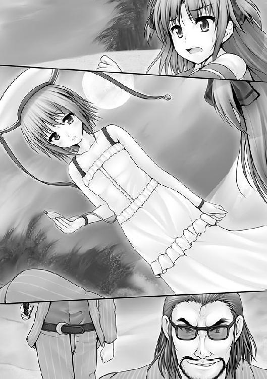

| ふるこんたくと！ ハートに一番近い場所 (角川スニーカー文庫) | |
| あすか 正太 | |
| 角川グループパブリッシング (2009) | |

ふるこんたくと！
ハートに一番近い場所
あすか正太
角川スニーカー文庫
本作品の全部または一部を無断で複製、転載、配信、送信したり、ホームページ上に転載することを禁止します。また、本作品の内容を無断で改変、改ざん等を行うことも禁止します。
本作品購入時にご承諾いただいた規約により、有償・無償にかかわらず本作品を第三者に譲渡することはできません。
本作品を示すサムネイルなどのイメージ画像は、再ダウンロード時に予告なく変更される場合があります。
本作品は縦書きでレイアウトされています。
また、ご覧になるリーディングシステムにより、表示の差が認められることがあります。
口絵・本文イラスト／uni8
序
「まさに日本晴れ！」
空高く、布団代わりにしていた段ボールが舞い上がった。
ビルの屋上である。
少年は派手に飛び起きると、さわやかな青空を見上げ。
「おおお、抜けるような青空！ なんといい天気だ！ 太陽もあんなに高く！ 高く......！」
もう昼だ。
そう気付いたとたん、みるみると少年の顔は青ざめていった。
「おおおおおおおおおおおおおおおお、オレとしたことが!! 完全に寝坊した!!」
走り出した少年のあとを、猫が追いかける。
「一路、待てよっ！」
猫が、喋っていた。
「久美恋どのと待ち合わせをしたのだ！ 船が出る前に!!」
一路は助走をつけると、身長よりも高い金網をかけあがった。外へジャンプする。
「一路、待てって言ってんだろ！」
屋上の外とは、つまり空であるわけで。
「あ......」
４階なので10メートルは超えていた。その高さから一路は飛び降りたのだ。
「ったく、............自分が寝たのがどこかぐらい、覚えておけよぉ」
「これしき！ 爺っちゃんに受けた修行の成果!!」
一路は空中でありながら姿勢を変えた。前屈みになって、くるくると回転をする。
一路は、まるで体操選手のごとく、キレイな着地を決めたのだ。
「熱ちっ」
裸足に、炎天下のアスファルトは厳しかったのだが。
「それが修行の成果かぁ？」
ヒゲを揺らして、猫が笑う。
馬鹿にされたのが悔しかったのか、一路は軽く唇を尖らせて。
「生まれつきだ。熱いのが苦手なのは」
「生きててよかったな」
「終わりよければすべてよし、だ」
車道なのだが。
「危ねえ、一路！」
すごい音を立てて、一台の車が現れた。
どれだけのスピードを出しているのか。その高級車はアスファルトに真っ黒なタイヤ跡を刻みながらコーナリング。一路の立つ車線上に飛び込んできたのだ。
「ん？」
悪いのは一路である。勝手に車道に飛び出した一路の不注意である。
しかし、運転席に座るドライバーはヤバイと思った瞬間に、ブレーキを踏むどころか、そのまま轢き逃げてやろうと言わんばかりに、さらにスピードを上げてきたのだ。
「なるほど、これが都会か」
分かったふうなことを一路は言い、納得した。
「バカ！ 一路、逃げろッ！」
「問題ない」
自信ありげに、一路はうなずいた。
黒塗りの暴走車は、ますますと加速した。
運転席のメーターは、時速１００キロを軽く振りきっているに違いなかった。
なのに、一路は逃げ出さなかった。
それどころか、深く一呼吸をする。
「おいっ!!」
一路は、死を覚悟したわけではない。
腹の底にある丹田で息を練り上げて、内功を全身に送り出していたのだ。
内功とは、気の力のことである。
胸から腕へ。腕から指先へ。
暴走車は眼前へと迫っていた。
だが一路の表情には、わずかたりともひるむところがなかった。
すっと目を細め、迫り来る鉄の塊を見つめる。
一路という名そのものと言わんばかりに真っ直ぐな瞳が、ある一点を探した。
崩壊点。
あらゆる構造体には、崩壊点と呼ばれる急所が存在する。
その場所を一定以上の強さで打撃すると、鉱物では最強の硬度を誇るダイアモンドですらも粉々に砕け散るのだ。
「見えた」
一路は練り上げた内功と、修行で鍛えた指先で、その一点を突いた。
その瞬間。
崩壊点を貫かれた車は、一路が打ち込んだ一点から粉々になっていった。
この作法を『点穴』という。
数秒前まで車だった部品が、四方八方に吹き飛んでいった。
その中心で、一路はうなずいた。
「ふむ、点穴は鉄にも通じる。さすが、爺っちゃんの言うとおりだ」
まるで修行か、技の試しを終えたあとのような爽快さであった。
「......ん？」
修行でもなんでもないことに気付いたのは、空中へ人間が４人ほど放り上げられているのを見つけた時だった。
車に乗っていた４人だろう。一路はハッと我に返った。
「中に人が!?」
「気付けよ」
先端が２つに分かれた尻尾をゆらして、猫が呆れた。
一路の眼は空中に向かう。
まず、チンピラが着るようなスーツを着た男が３人。
縦縞のスーツに、派手なネクタイとサングラスをしている。
何かの一味なのか、揃いの服装で決めている。
だが、一路の目をひいたのは、それとは別の、ふわりと広がる白いスカートだった。
（なんと、美しい......）
故郷、断情谷では見たことのない装束に、一路は心を奪われていた。
反射的に一路は空中に飛び上がり、彼女を助けていた。
花嫁を運ぶように両手で抱いたまま、一路はアスファルトに着地する。
男どもは地に倒れた。
「すまぬ」
一路は男たちに謝った。
「壊すつもりはなかった。つい身体が動いて」
「なっ、なんなんだ!? てめえッ!!」
立ち上がり、男どもは一路をにらみつけた。
だが、一路の手に少女がいることに気付き、自分たちの任務を思い出す。
「......小僧。黙って、そいつを俺たちに渡しな」
するとだ。少女は逃げるように、一路の背中に隠れた。
涼やかな乙女だった。
清楚な面差しをしている。触れたら折れてしまいそうなほどに、たおやかな姿をしていた。
かよわげな少女である。だが、勇気ある乙女である。
意思深き瞳には、芯の強さも感じられた。
きゅっと唇を嚙みながら、彼女は目の前の恐怖に負けまいとしている。
服ごしに、彼女の震えが伝わってきた。
（いったい、どんなひどい目に遭っていたのだ......？）
ふつふつと沸き上がる感情を抑えながら、一路は男たちを見据えた。
「......おぬしたち、何をした？」
「うるせえよ」
リーダー格らしき男が、スーツの内ポケットから拳銃を抜いた。
照準のレーザーポインタが、赤い点となって一路の身体をさまよう。
心臓のあたりでピタリと止まった。男は不敵な笑みを浮かべ。
「冗談だと、思うなよ」
「この子は怯えているぞ」
「だからどうした」
男は笑った。
「そのうち口もきけなくなるさ」
「......どういう意味だ」
「さぁな」
一路を子供扱いするように、男は笑った。
「俺らは言われた通りに誘拐して売り飛ばす、それだけさ」
「どこにだ！」
「知るかよ。売られた先でブツがどうなろうと知ったことか」
ヘッ、と男は笑い捨てた。
彼にとって少女の生命は、笑い捨てられるようなことだった。
（そんなことがあるものか）
ぎゅっ、と一路は拳を握りしめた。こみあげる怒りに身体を震わせ、訊ねる。
「......それが、おぬしたちの流儀か」
「ははっ、ただの仕事さ」
一路は、少女をかばうように前に出た。
「なるほど。都会にはロクでもないヤツがいると聞いたが」
「よかったな、ホンモノが見られて」
男は笑い、発砲した。
「なッ!?」
その薄ら笑みが凍り付いた。
「バ、バカなッ......!?」
銃弾が、止められていたのだ。
一路の手のひらで、ぎゅるぎゅると音を立てながら、鉛玉は激しくスピンしている。
むろん一路は人間だ。平気であるわけがない。
「う熱ちっ！」
生まれつき、熱いのは苦手だったから。
ぶるっと、一路が手をふる。銃弾はアスファルトに落ちて、ころころと転がった。
「あー、驚いた」
まぁ、そんなもんだった。一路のダメージは。
その上、隣に猫がやってきて。
「気をつけろよ、火傷するだろ」
「猫が喋ったぁ!?」
男は驚くが、一路たちは平静そのもので。
「うむ、鉛玉は止めるものじゃないな」
「だろ」
一路と猫はカラカラと笑い合った。
「火傷するとかしない、ってレベルじゃねえだろ！ ふざけやがって！」
ダンッ、ダンッ！ 男は続けざまに２発撃った。
一路は手を刀のようにして、上から下へ、さっと一振りした。
カカン！ 打つような金属音が響いた。
「がっ！」「ああっ！」
男の手下の２人が、悶えながら腕を押さえて倒れ込んだ。
一路が手刀ではじき返した銃弾だった。
アスファルトやビルの壁に跳弾させ、後方にいた手下たちの手に当てたのだった。
「なるほど、こうすればよかったのか」
「だろ」と猫。
「てめえ！ 何モンだぁ!?」
銃を握りしめ、男はいきり立った。
「聞くか？ 名乗れば〝仕合い〟だ。本気でかかるぞ」
なんと、これまでのは遊びだったというのか。
「うるせえッ！」
「海 虚心流、御統一路」
虚心流、御統一路」
「おい、一路！」
猫が制止するより早く、一路は飛び出していた。
次の瞬間、銃を持っていた男が宙を舞った。
抜く手も見せずに、ふところに飛び込んだ一路が、彼を投げ飛ばしたのだ。
「士道心得の一、売られた勝負に逃げてはならぬ」
「て、てめえ......、ミリオンか!?」
アスファルトに転がった男が、真っ赤な顔をして立ち上がった。
ぶつかってくる。
一路は動かなかった。相手の力の方向を利用し、次の瞬間には投げていた。
男の身体が、頭上を越えて舞い、また地に落ちる。
頭から激突して、男は気絶した。
「く......、覚えていろ！」
腕を撃たれた男２人が彼を抱える。３人はミジメな顔をして、ヨロヨロと逃げ去った。
一路は彼らを追わなかった。
彼女を助けられれば、それでよかった。
「おい、一路。さっき、流派を名乗ったろ。いいのか!?」
「悪いのか？」
「悪いのかって、おい、爺さんに何か言われただろ」
言われた、という言葉に一路はハッと反応した。
「そうだ、船だ！ 久美恋どのと約束をしていたのだ！」
久美恋との約束を思いだし、一路は慌てた。
一路はすぐさま駆けだそうとした。その腕を細い手がつかんだ。
「お待ち下さい！」
助けられた少女である。すがるように一路を引き留めた。
「わたくし、純条可憐と申します」
きらり、と瞳が輝いた。
澄み切った泉のような瞳をしている。
なんとひたむきな目をしているのか、と一路は思った。
噓や偽りといったものがまったく見えない。
「是非とも、お礼をさせてください」
「何を言う、これしき。礼をされるほどのことでもない」
一路は言い、上から下へ可憐を見やった。
怪我をしている様子はなかった。よかった。一路は心から安堵した。
けれど、身体が無事であればそれでよいわけではないとも思った。
むしろ一路は可憐の心を思った。
（この子は悪漢どもに、連れ去られようとしていたのだ）
（いくら自由になったところで、心細いことに変わりはあるまい......）
一路は困った。身体が２つあればと迷った。
「送っていってやりたいが、大事な約束があってな」
「わたくしのことなど」
可憐は微笑みながら首を振り、自分のことより一路の身体を心配した。
「お怪我はありませんか？」
「大丈夫だ。オレはこれに守られているからな」
そうだ。一路は顔を明るくさせた。
「代わりにこれを」
一路は自分が首にかけていたモノを、可憐の手につかませた。
「大切な人から貰ったものだ。御利益がある。おぬしを守ってくれるだろう」
「行ってしまわれるのですね」
可憐は慎みのある女だった。
無理に殿方を引き留めるようなことはしない。１日の半分は忍耐で生きる乙女であった。
「すまぬ」
「いま一度、お名前を」
「御統一路。一つの路と書いて、一路だ」
そう言って一路は走り去った。そのあとを猫が追う。
「一路！ おい、一路ってば！」
「どうした、また敵か」
「今の、すんげえ可愛い娘だったな！」
「カワイイオンナ？」
一路は首を傾げた。猫は興奮するいっぽうで。
「なんだよ、お前の好みじゃねえのかよ。かー、もったいねえなあ」
「なにを言ってるんだ？ オンナ？ オンナとは何だ？」
さっぱり分からないと言いたげに、一路はきょとんとした。
すると、猫はニンマリと笑い。
「いいさ、島に着いたら、この俺、猫丸様がたっぷりレクチャーしてやるさ。そっちは得意分野だからな」
猫丸がダッシュする。その後を追うように、一路もまっしぐらに駆けていった。
そして、残された少女は......。
彼の後ろ姿を、いつまでもいつまでも見つめ続けていた。
「御統一路さま......」
繰り返すようにつぶやく。可憐は一路が手渡してくれたものを確かめた。
お守りである。
上等な品ではなかった。御利益どころか、子供の小遣いでも買えそうな安物だった。
しかも、かなり古びている。言葉を選ばずに言えば、ボロい。
布地はすっかりと色が剝げ落ちていた。ところどころで糸がほつれ出している。
貧相と言えば、貧相なお守りだった。
だが、可憐はそれを見窄らしい代物だとは思わなかった。
それだけ肌身離さず身につけてきた大切なお守りである。そう可憐は感じたのだ。
「それほどまでに想いを込められたものを、わたくしに......」
愛おしむように、可憐はお守りをぎゅっと握りしめた。
「御統一路さま......。なんと高貴なお方なのでしょう」
（許されるならば、いつまでも彼のそばにいたい......）
胸のうちに灯った感情に気付いて、可憐はハッとなった。
恋。
それは可憐にとって、生まれて初めての想いだった。
身を焦がすほどに熱い衝動を覚えている自分に、可憐は驚き、そしてときめいた。
「一路さま......」
肌と肌が触れあったのは、ほんの一瞬であった。
わずかに触れあった１秒にも満たない瞬間に、可憐は人生を決めたのだ。
彼と自分の血を１つにつなげて、永久に結びつかせたいと。
永遠一途にして、奔放苛烈。
それが純条家に生まれた者の宿命であった。
一路から託されたお守りを両手でしっかと胸に抱きしめて、可憐は誓った。
「生命を救っていただきながら、何のお返しも出来ないとあっては、この可憐、純条家末代までの恥。天よりも高く、海よりも深い一路さまの温情、何が何でもお返しさせていただきます。──この生命に代えても!!」
一路のことを想うだけで、可憐は身体を震わせた。
ぐらぐらと大地も揺れた。感じがした。
（気のせいですわ）
可憐は胸にやった拳を握りしめた。
「一路さま、可憐はあなたのもとへ向かいます」
万に勝る想いを胸に抱き、可憐は歩き出した。
──同時刻。
那覇市に設置されていた震度計は震度３を観測した。
彼女もまた、ミリオンであった。
一 潔癖すぎる乙女
天才【サウザンド】
生まれつきに備わっている、きわめて優れた才能のこと。
今の時代においては、自分の遺伝子を調べることで、将来における各種病気の発症確率、不意の事故や災害に遭遇しなかった場合の寿命、知性や五感、身体技能などの能力適性が、かなりの精度で算出できるようになっている。
それは自分の全能力をゲームのキャラクターのように数値化できるということであり、それによって人々は、進学や就職、パートナー選びなどにおいて、信頼性の高いデータにもとづいた選択が出来るようになった。これは今世紀の人類が、旧世紀の人類よりもより失敗の少ない人生を送れるようになったことを意味している（これには異論も存在する）。
また、そういった才能が確率的に誕生することが分かってからは、天才指数（ＧＱ）なるものが考案された。
存在確率０・００１＝天才指数１０００。
１０００人に１人の存在を、今の時代では天才と呼ぶ。
１００００００人に１人の存在を、ミリオンと呼ぶ。
「一路く────んっ！」
燦々と降り注ぐ光は、地表にくっきりと影を焼き付け。
彼方に目をやれば、染まるように蒼い海がどこまでも広がる。
ここは那覇。日本の最南、沖縄県の県庁所在地だ。
四方を海で囲まれた沖縄本島にとって、港は世界への玄関口である。
羽鳥久美恋が立ち尽くしていたのは、そんな泊港であった。
「一路くん！ 御統一路くんはいませんか～！」
抜けるような空に久美恋の愛らしい声が響いた。
返事はない。まるでない。
「写メとか送ってもらえばよかったのに......」
やれやれといった感じで、隣では鍵子が肩をすくめていた。
謎宮鍵子、久美恋のルームメイトである。
「一路くんはずっと山の中で暮らしてきたんだよ、ケータイなんて持ってないよ」
「顔、まったく覚えてないの？」
「８年前の顔なら......」
「寝坊でもしてたりしてね」
「一路くんはそんなだらしない人じゃないもん！」
まるで自分自身をバカにされたみたいに久美恋が可愛らしい頰をぷくっと膨らませたものだから、鍵子は、うずうずとイタズラ心を搔きたてられて。
「ね、カッコイイの？」
「えっ」
「一路クンって、どんな男の子なの？ 久美恋は一路クンのどんなところが好きなの？」
「そ、そんなの関係ないし......」
「そうよねえ～」
鍵子は意味深なため息をついて。
「同じ部屋で暮らしたいからって、一路クンを女子として登録するなんて......」
「違うもん！」
「じゃあ、そのボストンバッグに入っているものは何？」
ニマっと笑みを浮かべて、鍵子が指摘した。
完全に閉め切れていないファスナーの隙間から、極東鳴神学園女子の制服が顔をのぞかせている。
「こ、これは......、そ、その......」
「ああ、妬けるわ」
「そんなんじゃないもん！」
久美恋は首を左右に振るものの、頰はみるみると赤くなるばかりで......。
「わっ、わたしは一路くんに、無事に転校してきて欲しいから仕方なく女子に」
「ふうーん、〝あの娘たち〟のせいにするんだあ」
〝あの娘たち〟というところに鍵子は含みを置いて、にまにまと笑みを浮かべた。
「いま、男の子が島に入るのが、どれだけ危険なことか。鍵子だって分かるでしょう？」
はいはい、と鍵子は頷いて。
「花嫁さんは新婚生活を始めるのに一生懸命ってことでしょ？」
「違うったらあ！」
と、だ。
係員が久美恋たちに乗船を促してきた。
学生たちはフェリーに乗り終えて、船着き場に残るのは久美恋たちだけになっていたのだ。
「そんな......」
「船の中を探してみようよ。〝沖縄〟にいるうちはまだ間に合うし」
「ああーんっ！ 一路く──ん！」
悲しげな声をあげて、久美恋は空を仰いだ。

無情にも、フェリーは港から離れてゆく。
学園のある鳴神島までは、約30分といったところか。
「一路くん！ 御統一路くん!! いませんか!? 久美恋です！ 羽鳥久美恋です！」
懸命に訴えて、久美恋は船内を見回した。
新入生や転校生たち、私服の男女に交じって、〝鳴学〟の制服を着た女子たちがいる。
彼女たちはみな、身体のどこかにリボンを結びつけていた。
髪、腕、制服、思い思いの場所に。
純白の布地に、まっすぐに走った赤いラインは純潔のしるし。
先ほど、久美恋や鍵子が〝あの娘たち〟と呼んだ少女たちである。
彼女たちは、このところ学園で急速に勢力を拡大している武力集団であった。
本を読んだり、ケータイをいじっていたり、各人バラバラで何気ない様子でいる。
だが、大人しげに見えるのは今のうちだけだ。
「10人以上いる......。どうしよう......、領海を越える前に、一路くんを見つけないと......」
船内アナウンスが『ここから先は租界』であることを告げた。
「ああーんっ！ 一路くんっ！」
次の瞬間だ。
船内のいたるところに控えていた女子たちが、一斉に立ち上がった。
「静粛にしろ!!」
バン、と奥の扉が開いて、マントを身につけた１人の女学生が現れた。
鮮烈な美しさであった。
リボンをつけた少女たちが左右に分かれ、彼女に道を譲る。
少女たちが向ける羨望のまなざしを受けながら、彼女は進んだ。
古舞静。
彼女の名を知らぬ新入生や転校生たちにも、静の全身から発せられるオーラは伝わっていた。
しん......、と一同は静まり返った。
静は、その麗しい唇を開いた。
「我ら、男子根絶委員会！」
「はぁ？」
マンガを読んでいた男子が、ぽかんと口を開けた。
年甲斐もない大人を見るような目で、静たちを見る。
ぷっ、と誰かが噴きだした。
何も知らない新入生たちは、程度の差はあれ、静たちに珍妙な印象を持っていたようだ。
笑いは次々と連鎖反応を起こし、客席いっぱいが笑いで埋め尽くされた。
「ああ......、間に合わなかった......」
がくり、と久美恋は膝を突いた。
静が腰に差している２本の日本刀を、久美恋は見逃さなかった。
閃光剣。
あまりに速すぎる居合い抜きで、素人にはその剣光しか追うことが出来ない。
久美恋は静の剣法を見たことがあった。
相手はオリンピックメダリスト。
勝負はわずか、０・１秒。
オリンピックメダリストは、静の一刀の前に叩き伏せられたのだ。
（しかも、スゴイのは彼女だけじゃない）
静が率いる桜組は、男子根絶委員会の中でも、とりわけ腕に覚えのある女子たちで編制された実力行使部隊であった。
ただの人間が勝てるはずもない。
（どうしよう......、このままじゃ......、みんなが）
その直後だ。
「者ども！ 静まれ!!」
静のそばに控えていた女子が、ずいっと進み出た。
「この海域はすでに日本ではない！ よって日本国の法は一切通用しない!!」
「はぁ？ 何を言ってるんだ？」
先ほどの男子である。
「男か」
静は腰にさしていた刀に手をやった。チャリっと金属の音がする。
竹刀でも木刀でも模擬刀でもない。本物である。
キラリと、静の目が刃のように光った。
「不浄なる者め。我ら男子根絶委員会が、貴様を海に叩き落とす」
「そんな話聞いてないぞ！ いつから鳴神学園は女子校になったんだ!?」
「いい質問だ」
フフッ、と静は不敵なまなざしを浮かべた。
「いつから鳴神学園が女子校になるのか......、よくぞ聞いてくれた......、フフフ......。それは！ 今からだ!!」
「誰が!? どうやって!?」
「私たちがするのだ！ 貴様ら男を排除することでな!!」
次の瞬間、くってかかった男子は海へ投げ飛ばされていた。
浮き輪が投げ込まれる。
静は微笑し。
「サメに食われずに済むかどうかは運次第だがな」
ふふふ、うふふと、取り巻きの乙女たちから忍び笑いが漏れる。
人を１人、海に叩きこんでおいて、笑う。
それが男子根絶委員会の乙女たちであった。
「ひどい！」「何の権利があって！」「ふざけないで！」
男子だけではない。女子たちからも声が上がった。
「玉璽は貰ってある！」
と、静の傍らに控えていた乙女ヒトミが、手にしていた証書をバッと開いた。
たっぷりと濃い墨汁で認められた文言は豪快にして達筆。
文章の末尾には、これまた鮮やかな朱色の印章が赤々と。
「極東鳴神学園絶対校則第一条第一則！ 生徒会長が公認した会則にもとづく活動は、すべてこれを合法とする!!」
ヒトミの言葉を静は継いだ。
「つまり、男子根絶を目指す我が委員会は、男子の無差別大量破壊が許されているのだ!!」
「メチャクチャだ！」
「自由！ それが極東鳴神学園!!」
傲然と、静は言い放った。
「無法だ！」
別の男子が立ち上がった。
「無法だと？」
静は涼やかなまなざしをかたむけて。
「この程度で死ぬような輩が、鳴神学園で生き残れるとでも思ったか？」
「この程度だって!? 海に投げ落とされたことがか!?」
「まだ、甘すぎるか？」
フフフ、と静は笑い。
「凡骨は去ね！ それが鳴神学園の掟だ!!」
控えていた女子たちが一斉に動き出した。
彼女たちの目的は文字通り、島から男子を根絶することだった。
うわあああああ......、と、船内は阿鼻叫喚の悲鳴に包まれた。
久美恋は黙っていられなくなった。
「ひどすぎる！」
「待って、久美恋」
飛びだそうとした彼女の手を、鍵子はぎゅっとつかんだ。
「今は一路クンを見つけるほうが先でしょ！」
「でも......！」
「いっそ、乗り遅れてくれてるといいんだけれど......」
そう願うような気持ちで、鍵子は海の彼方に目をやった。
沖縄本島の島影は、もう見えない。
残念ながら、一路は同じ船の中にいた。
そして、最悪なことになっていた。
船に酔い、トイレで１人、ゲロゲロと嘔吐していたのだ。
「修行のしすぎだな。敏感すぎるんだ」
情け容赦なく、猫丸が笑う。
冷酷なわけではない。兄弟のような気心の知れた仲ということである。
一路は逆流する胃液の酸味に耐えて、涙目を拭った。
「うう......。こんな不甲斐ない姿、久美恋どのに見せるわけにはいかない............」
「よかったな、合流できなくて」
実は、あれから一路と猫丸は全力ダッシュをしたおかげで、船に間に合っていたのだ。
だが、一路は船着き場で久美恋を見つけることが出来なかった。
時間通りに着いて、乗船の行列の末尾に並んでいたにもかかわらず、である。
「何かあったのだろうか。久美恋どの。心配だ......」
「......今のお前に、心配されてもな」
「ううっ」
一路は情けない自分の姿を恥じた。
「でも、意外だったな。ただの修行バカだと思ってたら、しっかり彼女を作ってるなんて。やるな。お前も隅におけないよな。このォ」
「カノジョ？」
耳慣れぬ言葉に、一路は首を傾げた。
「なぁなぁ、そのクミコちゃんってのは、どんな子なんだよ」
猫丸は身を乗り出した。
武道の話をするよりも、こういった色めいた話をするほうが、猫丸は好きであった。
「前に話さなかったか？」
「聞いてねえよ。クミコ、なかなか可愛い名前をしてるじゃないか。どんな仲なんだよ」
「好敵手であり、友であり、超えなければならぬ目標だ」
「敵っ!?」
猫丸は驚きに目を丸くした。
「友というにはおこがましいかもしれない。オレの８年は久美恋どのの背中に追いつくための８年だったとも言える。それほどに久美恋どのは強かった」
「そんなに強かったのかよ」
「ああ、まったく勝てなかった。その技は巧妙精緻にして自由奔放。特に足が凄かった。大地をえぐるような神速豪快な猛脚には、何度、空に飛ばされたことか」
「す、すげえな......」
「天才！ まさに久美恋どのこそ、武道を極めるために生まれてきた天才と言えよう。あれから８年。ああ、久美恋どのはどれほど強くなっているのだろうな。ああ、早く手合わせしたい！ 拳と拳を闘わせて、今度こそ、まいったと言わせたい！」
夢に胸は高鳴り、一路はらんらんと瞳を輝かせた。
「子供の頃ですら、久美恋どのはあれほどに強かったのだ。８年たった今はもう、筋骨隆々、一騎当千、さぞかし立派な益荒男、天を突くような偉丈夫となっているのだろうなあ」
猫丸は、一路の語る久美恋像をもわもわと想像してみた。
「それほどの好漢に再会できるのだ！ 猫丸、楽しみになってきたろう！」
「すっげえ、つまんねえ............」
猫丸は拍子抜けをしたように、深いため息をついた。
「お前に浮いた話を期待した俺っちが、バカだったよ......」
「アタシはこの階を捜すから、久美恋は下を」
「うんっ！」
鍵子と別れる。
昔から足には自信があった。久美恋は飛ぶように数段飛ばしで階段を駆け下りていった。
胸は、彼を心配する気持ちでいっぱいだった。
（一路くん......！ 一路くん......！）
前方不注意だった。
階段の踊り場で、久美恋は男子と激突した。
「うぷっ」
乗り物酔いで苦しんでいた男子は、すぐに蹲った。
一路である。
「ご、ごめんなさい！ 大丈夫ですか？」
久美恋は自分の服が汚れることもかまわず、彼を介抱した。
「か、かたじけない......」
「吐いてしまったほうが楽になれますよ」
ポケットからハンカチを出して渡し、彼の背中をさする。
久美恋は、彼が一路だと気付いているわけではない。
ただ、困っている人を放っておけなかっただけである。
一路もまた、彼女が久美恋だとは分かっていない。
「何をしている！」
魔を断つような声が、轟いた。
先ほど、古舞静の隣で、生徒会長公認証書を開いた乙女、ヒトミである。
男子を介抱している久美恋を見つけ、ヒトミの瞳は怒りに燃え上がった。
「女ともあろう者が！ 男に手を貸すなんて!!」
「きゃあっ！」
ヒトミは久美恋の手首をひねりあげた。
「なんてハレンチな女！ 制裁が必要ね!!」
「やめろ」
一路が手を出した。
キッ、とヒトミの顔が怒りに染まった。
「触れたわね！ 男があたしの手を!!」
「オトコ？」
初めて聞く言葉に、一路は首を傾げた。
「ちょうどいいわ、見せしめにしてやる」
ヒトミは拳法の構えを取った。
かなりの修練を積んでいるのだろう。ヒトミの構えはしなやかで無駄な力の入っていない攻防一体の構えであった。
彼女の筋のよさに、一路は感心した。
「ふむ、唐手だな」
「そうよ。南風原流唐手の神髄、見せてやるわ！」
やあっ、と声をあげて、ヒトミは一路に躍りかかった。
次の瞬間、ヒトミの小さな身体は宙を飛んでいた。
「な......！」
つかんでいたはずの手がつかまれ、ヒトミは空に放り投げられていたのだ。
どすん、と音がして、彼女は床に転がった。
「あ、あたしが投げられた......!?」
痛みよりも、自分が負けたことへの信じられなさに、ヒトミは愕然となった。
「騒がしい、何事だ」
凛とした声がする。
静だった。
階段の上から、一路とヒトミを見下ろす。
２人から見て、静の背後には窓があり、空が見えた。
太陽の輝きを背にした彼女は、光る翼を広げた天使のようであった。
いや、不敵な微笑は死神か。
「ほう、オトコ風情が我らに刃向かうか」
「お姉様......！」
失態を恥じて、ヒトミの頰が紅潮した。
「この者は......、この男は、あたしが海へ叩きこんでやります!!」
「やめておけ、叩きこまれるのはヒトミ、お前のほうだ」
「失礼な。オレはそんなことはしない」
不服そうに、一路は静に告げた。
「私が相手をしよう」
静は腰に差していた刀を１本、ぽんと一路に投げた。
受け取った瞬間、ずしりとした重みを一路は手のひらに感じた。
鞘に手をやり、剣を抜く。
キラリと刃が光る。まぎれもない実刀だった。
「どういう意味だ、これは」
「負けを武器のせいにされては気分が悪い。良いほうを使わせてやる」
「なるほど、確かに立派な業物だ......、しかし」
ちん......、と涼やかな音を立てて一路は刀を鞘に戻した。
「オレには不要のものだ」
「剣を抜け！」
命令するように、静は告げた。
「対等でなくば、私の気がすまん」
「おぬしが剣なら、オレは拳、これでいい」
「私が女だと思ってナメているのか!?」
「オンナ？」
その言葉に、一路は首を傾げた。
「お前は、オンナなのか？」
カッ、と静の頰が怒りに染まった。
「男めッ！」
ダン、と床を蹴り、静は一路に打ちかかった。
実刀ではない。そばに立てかけてあったモップを手に取って、一路に面を打とうとしたのだ。
彼を本気にさせるためである。
「勝負をしろ！ 私と!!」
一路はさっと右にかわし、突撃をかけてきた静と位置を入れ替えた。
「おぬしこそ！ その得物はなんだ？ 本気で来い！」
「剣では闘わぬというのか！ 私とは対等に闘えぬというのか！」
「武道家は言葉で闘うものではあるまい。それだけの剣、オレに見せてみろ」
「吠え面をかくなよ！」
モップを捨て、静は一気に一路との距離をつめた。
すっと細めた鋭い眼に、28の光る軌跡が見えた。
一路を斬り捨てるための剣筋だ。
（敵の動きに合わせて、千変万化に太刀筋を変える──それが不知火流の神髄！）
相手の筋肉の動き、息づかい、気の流れ。それらを摑んで、27の太刀筋を消し、これしかないという一太刀に絞りこんでいく。
（殺れる！）
ここまでが、わずか０・１秒。
静は刀の柄に手をかけ、抜刀に入った。
が、彼女の目に一路の素手が見えた。
武器も何も持たぬ、空っぽの拳が見えた。
（............ッ！）
静は手の中で柄を返した。刃のないほう、つまり峰を一路に向けたのだ。
「閃光剣ッ！」
剣の銀光が走った。
勝った......！ と静は思った。
彼女の剣は虚しく空を切っていた。
目の前に、一路の姿はない。
「どこに!?」
「なるほど、見事な抜刀術だ」
声は、右後方から聞こえた。
静は振り向いた。一路だ。
「の、逃れたのか!?」
とん......、と一路は２本の指で静の肩を突いた。
次の瞬間だ。静の身体は糸の切れた操り人形のように、ヘナヘナと崩れ落ちた。
「な......！」
静は目を疑った。
どこも怪我をしていないというのに、手足にまったく力が入らない。
「わ、私に何をした!?」
「点穴で、神経の巡りを逆にした。おぬしはしばらく立ち上がれない」
「女だから情けをかけたというのか！」
「違う」
「ならば、なぜ、とどめをささない？」
「おぬしが、悪いヤツではないからだ」
「私は貴様を屠ろうとしたのだぞ!!」
「戦う前に峰を返したろう？」
静は驚いた。
「見えていたのか!? 私の抜刀が!!」
「おぬしは素手の相手を斬るのは卑怯だと考えた。だから峰打ちしか出来なかった。おぬしたちの考えは好きになれぬが、おぬしの剣には筋が通っている。勝ち負けがつけば、それでいい」
「わ、私の神速が......！」
「不知火流抜刀術、さすがだった。おぬしが峰を返していなければ、負けていたのはオレかもしれぬ」
「な......！」
静は仰天し、みるみるうちに青ざめた。
「貴様！ 初めから、そのつもりだったのだな!!」
「そのつもり？」
何を言われているのか見当がつかず、一路は首を傾げた。
「殺せ！ この場で私を殺せ!!」
屈辱に染まった顔で、静は訴えた。
「オレは海虚心流、御統一路。また手合わせすることもあるだろう」
「きょ、虚心流......!?」
彼の口から出た言葉に、静は驚愕した。
「貴様！ 自分から八門を名乗るとは！ 分かっているのか！ その意味が！」
ああ、と一路はうなずき。
「島で一番になれぬようでは、天下で一番にはなれぬからな」
「そういう意味ではない!!」
「お姉様！ ここはひとまず引きましょう!!」
乙女たちが雪崩れ込み、静を守るように取り囲んだ。
「止めるな！」静は抵抗した「話はまだ終わっていない！」
乙女たちは引かなかった。静は彼女たちに引きずられる形で、この場から消えていった。
「............？」
最後に見せた静の狼狽が解せず、一路は首を傾げた。
そのすぐそばでは。
「みするぎ......いちろ......？」
久美恋はびっくりした顔で、目を点にしていた。
信じられず、もう一度、名を口にする。
「御統、一路くん？」
彼が振り向いた。
（間違いない、一路くんだ！）
久美恋の顔は驚きから喜びに変わった。
（助けてくれた男の子が、他ならぬ一路くんだったなんて......）
ただでさえ人より夢見がちな女の子である久美恋は、おとぎ話みたいな再会に、これ以上ないぐらいに胸を高鳴らせた。
（はっ）
久美恋はすぐそばの窓を見て、自分の姿を確かめる。髪型よし、前髪よし。
「すまない」
「は、はいっ！......えっ!?」
久美恋はくるりと振り向いて、首を傾げた。
いっぽう一路は、ハンカチと服を汚してしまったことを謝った。
「そんなの全然！ わたしのほうこそ、また助けてもらって」
「また？」
今度は一路がきょとんと首を傾げる番だった。
が、すぐに気にならなくなった。
深くは考えない。
虚心流の極意は融通無礙にして千変万化。
流れに身をゆだね、雲のように変化することである。
「着替えなら、ちょうどボストンバッグにあるし......」
久美恋にしてみれば、そんなことはまったく気にならない。
もともと男子根絶委員会から目を逸らすため、一路に女装させようと、極東鳴神学園女子の制服を用意していたのだ。
（一路くんと一緒の学園生活を送るために......）
ポッ、と久美恋はまた顔を赤くした。
（まだ早い、まだ早い。一路くんがわたしのこと、どう思っているか、聞かないと）
かたや一路はきょろきょろと辺りを見回したが、意中の人物が見あたらず、そばにいた彼女に聞いてみることにした。
「すまぬが、羽鳥久美恋という人物を知らないか？」
「え？」
久美恋は、ほんの一瞬だけ、ぽかんと口を丸くした。
「ああ、そうだよね。８年ぶりだもんね」
「８年ぶり？ ああ、そうだが。なぜ知っている？」
一路が真顔で驚くので、久美恋はクスっと笑った。
（わたしのほうが先に気づいている）
ちょっとだけ、お姉さんっぽい気分に久美恋はなれたのだ。
「まだ分かんないの？ わたしだよ、久美恋だよ」
「何を言う。おぬしが久美恋どのなわけがないだろう」
一路はさわやかに否定した。
「うわ、一路クン。相当、久美恋のこと、美人に想定してたみたいね......」
駆けつけた鍵子が、隣でつぶやいた。
「えっ......」
ガン......！ と久美恋は傷ついた。
またそばの窓に目をやって、ガラスに映る自分を見た。
美容院にだっていったし、朝シャンだってしたし、おしゃれも頑張った。
今日は暇さえあれば手鏡で前髪を整えていた。
可愛いって思って欲しくて頑張った。
「このまま帰るって手もあるわね」
ぽつりと、鍵子がつぶやく。
「ううっ」
それは嫌だった。
（８年ぶりに逢えたんだもん！）
バッ、と久美恋はお守りを見せた。
「これ、覚えてる？」
「そ、それは！」
自分が持っていたのと同じお守りに、一路は驚いた。
「く、久美恋どのなのか、本当に」
「ご期待に添えなくてごめんなさい......」
すると、一路はみるみると申し訳なさげな顔になった。
「いや、すまない。これは見違えた。船着き場で見つけられなかったのは当然だ。こんなに綺麗になっているとは、想像も付かなかった」
「き、きれい!?」
突然の褒め言葉に、久美恋は息を詰まらせた。
地獄から、たちまちに天国である。
「や、やだ。大げさだよ」
「いや、とても美しくなられた。さすがは久美恋どの。修行をしながら、腕だけではなく美にも磨きをかけるとは」
「......修行？」
きょとんと、久美恋は目を丸くした。
「８年前は手も足も出なかったが、今度はそうはいかぬぞ。島に着いたら、さっそく手合わせしよう」
「え......。一路くん、言ってなかったっけ？ わたし、拳法はやめたのよ」
「な、なんと!?」
そんなの聞いてない。一路は愕然となった。
かたや、久美恋は恥ずかしそうに頰を染めて。
「だって、乱暴な女の子なんて、嫌いでしょ？」
「オンナ？」
一路は首を傾げた。
「久美恋どのは、オンナなのか？」
「え......？」
想像を絶する一路の質問に、久美恋の頭は真っ白になった。
石の像のように固まってしまい、何も言えなくなる。
代わりに、鍵子が聞いた。
「も、もしかして一路クン。久美恋のこと、オトコだと思ってたの？」
「オトコ？ ああ、オレと同じだと思っていた」
「そ、そんな......！」
かすれた声が、久美恋の喉から漏れた。
目はうつろ、心はずたずた、ライフはもう０だ。
目の前が真っ暗になっていたのは一路も同じだった。
「そうか......、久美恋どのは......、武道をやめていたのか......、そうか......」
ふらふら、とよろめく。
「久美恋どのに追いつき追い越すために修行してきたオレの８年間は......、８年間は......」
「わたしが......、男と......、思われてたなんて......」
クラっと、なったのはどっちが先だったか。
ばたん。どすん。
２人とも、そろいもそろって気絶した。
「あらま、息もぴったり。仲良しね」
クスっと、鍵子は笑った。
二 自由すぎる校則
鳴神島【なるかみ・とう】
東シナ海に浮かぶ琉球諸島の一島。沖縄王国の一部であったが、19世紀に英国の租借地となる。沖縄王国が日本に併合されるようになっても、この地は長らく英国領としての地位を保ち続けた。現在の学園都市の起源は、20世紀前半、世界大戦の時代に、さまざまな理由で、生まれた国に住むことが出来なくなった諸国の学生をたくさん受け入れたことに由来する。
その後、英国が覇権国の地位を滑り落ちるのと比例して、この島は無国籍都市の色合いを深めるようになった。安全や倫理上の理由からたいていの国では禁止されている危険な研究や実験のもろもろが、この島においては〝真理探究〟の名のもとに、ほとんどが認められているどころか積極的に推奨されているため、現在では世界中の企業や政府が「研究支援」の名目で、この島にお金やスタッフを提供し、この島の自由性を「例外」扱いで守ってくれるようになっている。
国家元首は生徒会長。
この島では大統領にあたる国家元首の肩書きが生徒会長なのである。
昼下がり、である。
（久美恋の胃袋って、いったい全体、どうなってるんだろ......）
しみじみと鍵子は思った。
どれだけ食べれば久美恋は気が済むのか。
段ボール１箱分はあった、お菓子の山は、もう半分ほどが空になっている。
「うえっ、ぱくっ。ぐすっ、ぱくぱくっ」
泣きながら、食べていた。
ここは鍵子が寮長を務めている女子寮。久美恋の部屋である。
船内で見事８年ぶりの再会を果たし、そのあとは、船が島に着くまで、ひたすら気まずい時間を過ごした久美恋は、自室に戻って、いわゆるヤケ食いをしているのだった。
「泣くか、食べるか、どっちかにすればいいのに......」
鍵子は、お団子を１つ拝借して。
「せっかくダイエットしたのに......。あら美味し」
「いいもん」
「太るよ」
「太ったっていいもんっ」
「愛しい一路クンにフラれたから？」
「ちっ、違うもんっ！」
久美恋は全力で否定するが、みるみると耳たぶまで真っ赤になっていった。
「一路くんのことなんて......、一路くんのことなんて......、もう、知らないもん」
ぷいっと背を向けると、久美恋は膝を抱えた。
イジイジと、座布団に『の』の字を書き始める。
「もう知らない、ねえ......」
ニヤニヤと、鍵子は肩をすくめた。
「ホントだってば！」
ぷぅっと頰を膨らませて、久美恋はアピールした。
「一路クンと同棲までするつもりだったんだもんねえ」
「同棲じゃないもん！ 同居だもん！」
久美恋はますます真っ赤になった。
「同じじゃないの」
「一路くんを女の子として転校させるんだから、他の子と同室なんかさせられないでしょう？」
「ふふっ、一路クンに浮気して欲しくないから？」
「違うもん！ 男子ってことがバレちゃったんだから、一緒に住む必要ないんだもん！」
「ま、確かに男子根絶委員会も、島の中じゃ風紀委員会の眼もあるし、船でやってたみたいなムチャも出来なそうだしね。大丈夫といえば大丈夫か......」
「そりゃわたしだって、最初逢った時に一路くんに気付いてあげられなかったんだけど......」
「......アタシの話、聞いてる？」
「だって一路くん、８年間も、わたしのこと、男の子だと思ってたんだよ」
（ダメだこりゃ）
鍵子は額に手をやった。
（一路クンのことで頭がいっぱいなのね......）
作戦を変えて、鍵子は話を振った。
「似たようなもんじゃない。久美恋だって、一路クンを女の子にして転校させるつもりだったんだし」
「ぜんぜん違うよぉ！」
「......ごまかされなかったか」
お団子を、もう１個つまむ。
「じゃ、久美恋は一路クンのこと、キライになったんだ」
「とーぜんよ、あんな人」
「ふうん」
「なによ」
「じゃ、アタシが貰っちゃおうかなぁ、一路クン」
「ふえっ!?」
久美恋は声を裏返らせた。
フフン、とまんざらでもない顔を鍵子はして。
「何をしでかすか分かんない感じ、面白そうだし」
「ないない！ 面白くない！ 面白くないって!!」
分かりやすいぐらいに、久美恋はおろおろと動揺し始めた。
「けっこう楽しいと思うのよね。退屈知らずな毎日って」
「ダメっ！ そんなのダメ！」
「フフフ、冗談よ」
ぺろりと鍵子は舌を出し。
「久美恋が素直じゃないから、からかってみただけ」
「も～、いじわる～！」
ツンと唇を尖らせながらも、久美恋はホッと胸をなでおろした。
「ねえ久美恋、アタシは一路クンがあんな人でヨカッタって思ってるよ」
「どうしてえ!?」
綺麗な眉をかわいらしく曲げて、久美恋は鍵子を見つめた。
「だって、一路クン、彼女いそうな感じがしないんだもん」
「そっ、そっかなあ......？」
「男と女の見分けも付かない人が、どーやって彼女を作るのよ......」
「あ、そっか！」
ぱあっ、と久美恋はひまわりのような笑顔になった。
「なんて単純な子......」
「えっ？」
「なんでもない。むしろこっからが女の腕の見せ所じゃないの？」
「どういう意味？」
「久美恋が色々と教えてあげればいいのよ」
「教える？」
「恋の手ほどきよ」
「無理！ 無理無理！ わたしには無理だよっ！」
顔を真っ赤にして、久美恋は狼狽した。
「アタシ、知ってるんだから。毎晩、久美恋が寸劇をしてたこと」
「見てたの!?」
一路との再会の予行練習である。
「シナリオ、いくつまで考えたんだっけ」
「......ごじゅうさん」
「よくもまあ考えたものだわね」
「だっ、だって、一路くんのほうから島に来てくれるなんて思わなかったんだもん」
「そりゃあ勘違いもするわよねえ。......実際は女の子としてすら認識されていなかったわけだけれども」
「わ～ん、一路くんのばかーっ！」
久美恋はまたまた凹んだ。
「久美恋！ 恋路に逆境はつきものよ」
「で、でも......」久美恋は声を弱めた。
「ここで頑張らなくてどうするの？ シナリオいくつまで考えたの!?」
「ごじゅうさん......」
「妄想で終わらせていいの!?」
「えっ......」
「後悔することなんて、後でいくらでも出来るんだから、こんな時こそ妄想力を発揮しないと！」
「妄想力......」
ごくりと、久美恋は息を呑んだ。
同じ頃、同じ建物の屋根の上である。
「とりあえず、死ね」
一路は、猫丸から真顔で、そんな言葉を突きつけられていた。
「何を物騒な話を」
「どこの世界に、男と女を素で間違える大馬鹿がいるんだよ」
うっ、と一路はたじろいだ。
「そ、そこを追及されると困るが......。ちゃんと助けたぞ、久美恋どのを」
「最後で台無しだ」
「ささいな間違いだろう」
一路は唇を尖らせて。
「アレではまるで、オレが失礼なことをしたみたいではないか」
「しただろ。ていうか、お前だって気絶したじゃないか」
「あ、あれはびっくりしただけで。もう立ち直った」
「反省はないのか!!」
「久美恋どのは大切な友だ。男か女かなど、たいしたことではあるまい」
がくっ、と猫丸は呆れた。
「ああ、今の台詞を聞いたら、久美恋ちゃん、自殺だな」
「じ、自殺!?」
びっくりしたように、一路は目を見開いて。
「なんでだ？ 船から降りる前、猫丸が教えてくれたではないか。男と女は染色体というものが１つ違うだけだと。つまり同じということであろ？」
「ますます自殺一直線だな」
「お、脅かすな！ オレが勘違いしてたぐらいで、なぜ久美恋どのが生命を絶たねばならぬのだ!?」
「そうかな？ ありゃあ恋する女の目をしていたぜ、２００年生きてきた俺だから分かる」
「鯉？ 魚のか？」
はあ、と猫丸はため息をついた。
「......とりあえず、お前が何も分かっていないことは分かった」
「何を分かっていないというのだ？ オレはこれでも修行に修行を積んで......」
「関係ないだろ、修行は」
あっさりと猫丸は切って捨て。
「久美恋ちゃんと仲直りしたいんだろ？」
「もちろんだ」
「男と女がケンカをしたら、男が謝るもんなんだ」
「なんと！」
「そんなもんだよ。男の一生なんてものは、生まれた頃から競争を叩き込まれ、稼げなければ負け組、働きすぎても家庭を顧みないと文句をつけられ、稼ぎは子供に吸い取られ、育てば無視され、ジジイになったら、女より10年は早く死んじまう」
「むぅ......、いいことが１つもないような気もするが」
「それが男の人生だからな」
「なんとなく分かる気もする」
「ま、だからお前は死ね」
「ううっ......、短い人生だった......、というか死人が出なければ問題は解決しないのか？」
一路は疑問を口にした。
「いや、むしろお前が死んだら、久美恋ちゃんも死ぬ」
「どうすればいいんだ!?」
一路は途方にくれた。
（オレの不覚で久美恋どのを死なせるわけにはいかない......！）
キラリと、猫丸は瞳を輝かせた。
「知りたいか？」
「頼む、猫丸！」
一路は手をついて、お願いの姿勢を取った。
「久美恋どのを死から救う方法を教えてくれ」
「自分が悪いってこと、分かってんのかな......」
「オレが悪い......。そうか、オレが謝ればいいのだな！」
「それも違うな」
フフンと猫丸はヒゲをゆらし。
「女はとにかく褒めるんだ」
「なんと！」
「とっておきの殺し文句を教えてやるよ。３００年生きてきた、この俺がな」
よし、と意気込んで一路は久美恋を捜しにいった。
はた、と出くわしたのは寮の廊下であった。
「うわっ、く、久美恋どの」
いきなりすぎて心の準備がつかず、一路はたじろいだ。
板張りの廊下が、みしっ......と鳴る。
古びた木造の建物だった。
「い、一路くん......!?」
久美恋は久美恋で、内心は激しく動揺していた。
みしっ......。久美恋の足が床を鳴らす。
（仲直りしなくちゃ......）
鍵子に言われた言葉を思い出し、久美恋は笑顔になろうとした。
一路は一路で。
（か、会話のきっかけをつかまねば）
コホンと咳払いをし、話のトバ口を摑もうとする。
「男子三日会わざれば刮目してみよ、というが......」
「女なんですけど」
さっそく行き詰まった。
「あ、いや、オレが言いたいのは......」
一路はおろおろと狼狽する。
「久美恋どのは、その、なんというか、女みたいだ」
「みたいって、どーゆーことよっ!?」
久美恋の乙女心はズタズタのボロボロである。
「ん？ あ、女っぽいだ」
「女そのものなんですけど............」
「あ、色っぽいの間違いだった」
「い、今さら言われたって............」
「す、すまない」
「謝られたって......」
「猫丸がこう言えと」
「１つも本音はなかったのね!!」
とどめの一言が、久美恋を粉砕した。
「そ、そうではなく......。う......、また逆効果だったか」
すまない......、と一路は謝った。
「分かりもせずに適当なこと言ってたの!?」
「いや、ただ、久美恋どのを励ましたくて............」
どうしていいのか分からず、一路はしどろもどろになった。
その狼狽えっぷりが、あまりに本気に見えたので。
くすっ、と久美恋は吹きだしてしまった。
「許したげる」
久美恋は一路の手を引いた。
「行こ。会長さんのトコ。転入の手続きをしなくちゃ」
日も傾き始めた昼下がり。
久美恋と一路の２人は壮麗な門の前に立っていた。
「生徒会長邸よ」
「ほわいとはうす？」
「もともとは学園創立当時の校舎区画だったんだけれど、今は、島中が学校になっているから、ここは会長邸になっているの」
「生徒会長とは、どんな人なのだ？」
訊ねられ、久美恋は困った顔をした。
「なんていうか、その......凄い人ね」
「おお、凄い人か」
一路は素直に感心した。
「そういう意味とは、少し違うんだけれど......」
普通、転校というと、先生とか校長先生に挨拶をするものである。
が、この学園では生徒会長が権力の頂点にいるので、こういうことになっているのだ。
「うーん、なんて言ったらいいのかしら」
なんと説明すればよいのか、久美恋は細い人差し指を額に当て。
「男子根絶委員会みたいな変な委員会が存在するのも、ほとんど生徒会長のせいなのよ」
「ん？ どういう意味だ？」
「この学園では、生徒会長が印鑑を捺した文書は、法律と同じ力があるの」
「なるほど」一路は大きくうなずいて「会長は会長なりに深い考えがあって、あのような委員会を許したのだな」
「だといいんだけれど......」
今度は久美恋が質問をした。
「一路くんはなんで、鳴神島に来ようと思ったの？ 手紙には訪ねたい人がいるってあったけれど......」
「爺っちゃんとケンカをしてしまったのだ」
「えっ」
「いつまでも奥義を伝授してくれぬものだから、焦れてしまったのだ。そしたら爺っちゃんは外の世界を見てこいと。虚心流の奥義を知りたければ、葛桐さんを訪ねろと」
「葛桐さんって一路くんの兄弟子さんだよね」
「兄弟子だ。今はこの島、鳴神島にいるらしい」
「葛桐さんに認めてもらえば、一路くんも免許皆伝なのね」
「そうだ。奥義を授かり、点穴を究める。それがオレの夢」
「ごめんね、さっきは怒ったりして」
「いいや、久美恋どのを守れてよかった」
そんな一路の口ぶりを見ると、久美恋は『何も変わってないな』と思う。
変わったのは自分なのだと。
「葛桐さんを、見つけられるといいね。わたしも手伝う」
久美恋は笑って、門をくぐった。
門には１枚の扁額がかかっていた。そこにはこう書かれていた。
〝才なき者、この門をくぐるべからず〟
日々樹ワタルとは、鳴神学園永世生徒会長の名である。
「おお、ハニー！ 愛しのスイートハニー！」
久美恋が部屋に入るや、生徒会長は両手を広げて駆け寄ってきた。
むぎゅっ、と抱きしめる。
会長は会長なのに背が低かった。久美恋より頭ひとつ小さい。だから久美恋に抱きつくと自然と彼女の胸に顔を埋める形になった。
でも、久美恋は怒らない。
なぜなら生徒会長は女の子だから。
「やっと久美恋も、私のプロポーズを受けてくれる気になったのだな」
「何を言ってるんですか、会長！」
結局、怒った。
久美恋は一路のほうを向くと、顔を真っ赤にして。
「ほ、本気にしないでね、会長の、いつもの冗談なんだから」
「かなり本気なのだが」
「余計に困りますっ！」
あはは、と会長は笑って、久美恋の顎を人差し指でなぞると。
「怒った顔が、これがまたラブリーチャーミーなのだなぁ」
「もうっ！ いいかげんにして下さいっ！」
久美恋が振り払おうとすると、会長はくるりと身をかわし、一路の前に立った。
「ん？ 誰だ、お前は」
「会長、そのことで謝りたいことがあるんです......」
久美恋は一路を女の子と偽って転校させようとしたことを話した。
「......ふむ、男子根絶委員会から逃れるためか」
「ごめんなさい、よくないことだとは分かっていたんですけれど......」
「確かに連中のやってることは度を超してるからな。分からなくもない」
「じゃあ、さっそく一路くんを男子として、転入の手続きを」
「それは認められないな」
けんもほろろな一言だった。
「どうしてですか!?」
にまにまとした笑みを会長は浮かべて。
「ライバルの転校を許可する馬鹿など、いるわけがないだろう？」
「意地悪を言わないでくださいっ」
「それは違うぞ、ハニー」
生徒会長はさらっと笑って、久美恋の柔らかい頰に両手を添えた。
「私は、ハニーの困った顔を見るのが大好きなだけなのだ」
「かんっぺきに意地悪じゃないですか！」
「転校を許可したのは、女子として登録された彼だ。最初に噓を吐いたのはどっちかな？」
「そっ、それはそうなんですけど......」
久美恋は、もにょもにょと両手の指を絡め合わせる。
「うふっ、ラブリー」
ぱちり、と会長は手にしていたケータイで久美恋を撮影した。
「ラブリーじゃありませんっ！」
「冗談はさておいて......、御統一路」
くるりと振り向き、会長は一路に告げた。
「私は噓が嫌いだ。偽装工作を働いた以上、よほどの目的がないかぎり、転校は認められない」
久美恋が割って入った。
「会長だって言ったじゃないですか、委員会は度を超しているって......」
「そう。連中は私の想像を超えてくれた。褒めているのだ」
「褒めるんですかっ!?」
「そうでなければ、あんな狂った委員会、許可など出したりするわけがないだろう？」
ふふふ......、と会長はさわやかに笑った。
「転校を認めてもらわねば困る」
一路は言った。
「オレは〝路〟を極めるためにこの島に来た。帰れと言われても帰るつもりはない」
「〝路〟？」
ぴくっと、会長は美しい眉を動かした。
「点穴術、海虚心流だ」
「ほう」
会長は笑みを浮かべて。
「面白い。〝路〟を極めて、お前は何になるのだ？」
「もちろん、古今無双の武道家に」
「はっはっはっは！」
会長は笑った。部屋が震えるほどの高笑いをあげた。
「な、何がおかしい」
「小さい！ その程度の野心など、この島には掃いて捨てるほど転がっている!!」
「オレは１番を目指している!!」
「１番？ 無理ね」
プッ、と会長は笑い。
「極める？ もっともらしい言葉で飾っているけど、つまるところ誰かのコピーになるってことであろ？」
「何が間違っているというのだ！」
「わからんか？」
会長は呆れたようにため息をつき。
「つまんないのよ」
「な......！ なんだと!!」
会長の断言に、一路はよろめいた。
「他人の影を追いかけてるだけの男が何になれるというのだ！ 私が見たいのは超弩級の才！ ただの天才に用などない!!」
「......才、だと？」
「そうだ」
こくり、と会長は強くうなずいて。
「御統一路、私が納得する〝才〟を見せるのだ！ ２日後に早春祭がある。その日の日没までにな。それが出来ぬのなら、この島から出ていってもらおう！」
「............ッ！」
早春祭とは、新入生や転校生を歓迎するためのお祭りである。
ちなみに鳴神学園では、何かの口実をつけては毎月のように祭りが開催される。
会長の趣味だった。
夕暮れである。空には星が瞬き始めていた。
「ごめんなさい」
久美恋は申し訳のない顔をして、しゅんとなった。
２人は寮へと続く、上り坂を歩いていた。
「どうして久美恋どのが謝る必要がある？」
「だって、わたしが余計な小細工をしたせいで、一路くんが」
「オレのためにしてくれたことだろう」
「でも、わたしが会長さんを説得できていれば」
「いや、久美恋どののせいではない。オレが未熟だからだ」
心から、一路はそう思うようになっていた。
丘のてっぺんに寮が見えた。さほど高くはない丘だが、ぐるりと道が螺旋を描いているせいで、斜面沿いに島の中心部を一望できる。あと30分もすれば、太陽も完全に沈んで、鮮やかな夜景を見ることが出来るだろう。
「会長さんの性格、分かっていたはずなのに......」
「あの者......、爺っちゃんと同じことを言った......」
「なんて、言われたの？」
「オレは小さいと、何も知らないと」
「そうだ、すべては貴様の不覚」
声がした、次の瞬間。
「きゃあ！」
久美恋が襲われた。
足音もせず、気配も感じさせず、影の中から男が現れた。
久美恋は抵抗を図ろうとするが、逆に男に関節を極められ、難なく抱えあげられてしまう。
「待てっ！」
一路は叫ぶが、男は無視して跳んだ。
なんという跳躍力か。男は少女を１人抱えているというのに、数十メートル飛ばしで坂を駆け上がっていく。
「不覚っ！」
武道家ともあろうものが敵の気配にも気づけぬとは。一路は自分を叱った。
「！」
謎の敵は、空中で久美恋を捨てた。
「久美恋どの！」
一路は跳んだ。滑り込んで久美恋を助けた。
だが、久美恋だと思っていたものは、ただの黒いマントだった。
「これは......!!」
四方を見回す。敵の姿はどこにもない。
「くっ......、どこに」
「ここだ」
背後から、声がした。
一路が気配を感じた時には、もう、男の指が一路の背中に触れていた。
「い、いつの間に!?」
わずかに押し込まれれば、そこには魂中──心臓の動きを司るツボがある。
身じろぎすら出来ず、一路は敵の早業に戦慄した。
「技の名を答えろ。答えられなければ、殺す」
「浮羽隠し」
「まだまだだな、一路」
「葛桐さん！」
一路は振り返った。たちまち笑顔になる。
だが、葛桐は厳しい顔を崩そうとはしなかった。
ぴたりと、一路も冷静になった。
「............どうしたんですか？ 葛桐さん」
一路、と葛桐は告げた。
「なぜ、不知火流を殺さなかった」
三 神秘すぎる感触
八門【はちもん】
『八門』とは、龍 の血脈を守るために生まれた８つの武道の使い手である。
の血脈を守るために生まれた８つの武道の使い手である。
龍の血脈とは、かつて沖縄を治めていた王家の血筋をさす。
『八門の使い手』は、地上最強の拳法家。
戦った相手は必ず殺すことを信条に、暗殺を生業とした。
沖縄を狙った王は１人の例外もなく殺された。八門の使い手は、沖縄を侵した者たちを地球の裏側までも追いかけて、何重もの壁に囲まれた城に閉じこもる王をこともなげに暗殺した。
世紀が変わり、戦争のあり方がどんなに変わろうと、八門の奥義を身につけた暗殺者の前には兵器の進化など、まったく無意味だった。
諸国は彼らの力を認め、八門の使い手を敵としてではなく、むしろ自分たちを守るボディガードとして雇うようになった。
拳を使う『海虚心流』も、剣を使う『白鳥不知火流』も、八門の１流派である。
何かの聞き間違いだと、一路は思った。
「不知火、ですか」
葛桐がフェリーでの一件を知っていたことに、一路は驚いていた。
「見ていたのですか」
「気付かなかったのか？」
「............」
葛桐の存在に一度も気付けなかったことに、一路は恥じ入った。
「どうだった、不知火の使い手は」
「見事な抜刀でした。さすが八門の仲間です」
「なぜ、あのような戦い方をした」
「後の先。相手に技を仕掛けさせてから、それを破る。兵法です」
「そうだな。千変万化にして融通無礙。型無シの虚心流の極意でもある」
「はい」
「ならば、なぜ不知火の娘を殺さなかった？」
「え......」
ふたたび一路は耳を疑った。
「な、何を言うんですか、葛桐さん」
「聞こえなかったか？ どうして不知火の娘にトドメをささなかった？」
「勝負はついていました」
「娘は生きていた」
「どうして殺す必要があるのですか」
「八門は、殺人術だからだ」
「な......」
ショックに、一路は立ち尽くした。
ふるふると首を振る。
「うそだ」
ただそれだけを言って、絶句する。
「私がお前に噓を言って、何の意味がある？」
「爺っちゃんはそんなことを言わなかった！ 虚心流は......、点穴の技は......、東洋武術の究極だと！ 人間の可能性の限界に挑戦する路だと、言ってくれた!!」
「間違ってはないな。点穴こそ、人体の真理に迫る究極の武術にして医術」
「武術にして......、医術？」
問うように一路は葛桐に訊ねた。
「そう、医術だ。人の生死を操る技だ。医術とは裏を返せば殺人の技術に他ならない。まして究極の技ならば......」
「うそだ！」
葛桐の言葉を遮るように、一路は声を荒げた。
信じられなかった。信じたくなかった。
「うそだと言ってください。葛桐さん！」
葛桐に詰め寄るように、一路は抗弁した。
「お師さんに『流派の名を口にするな』と言われていなかったか？」
「そんなこと......、あ」
ハッと一路は思い出した。
「そういえば......旅立つ時に......」
確かに言われていた。
断情谷から出て行く時は、爺っちゃんに対する反発もあって、言われた言葉にちゃんと耳を貸さなかったのだ。
葛桐は、さもありなんといった顔で顔色一つも変えず。
「そういうことだ」
「相手は同じ八門の同胞です！」
「仲間だからだ」
きっぱりと、葛桐は言った。
「どうして!?」
「お前は自分の技を盗まれた時に、その責任がとれるのか？」
「責任......」
「点穴は一突きで人の命を奪うことも出来る技術。他の八門も同じだ。ゆえにその深奥に触れようとするならば、相応の覚悟をしなければならぬ」
「どんな覚悟ですか」
「技の秘密を守り、敗れた時には死を受け入れる覚悟だ」
「死ぬことと殺すことは違います！」
「同じだ」
葛桐は決然たる瞳で、一路を見据える。
「仲間ですら手にかける覚悟のない者が、奥義の秘密を守り通せるのか？」
「............ッ！」
「お前は掟を破った。それだけで奥義を手に入れる資格などない」
「何を破ったというのです！」
「〝必殺〟の掟だ」
冷徹に、葛桐は言い切った。
「技を見せた相手を殺し、流派を知られた相手を殺し、八門の奥義の秘密を守りきる掟だ。お前は人前で八門の技を使い、流派を名乗った」
「..............................」
一路は呆然とした顔を隠すことなく、ただ葛桐を見上げた。
「たしか、お師さんは私にお前を試験するようにと言っていたのだな」
ふむ、と葛桐は腕組みをし、一路に免許皆伝の試験内容を伝えた。
「今からでもいい。不知火流の娘にトドメを刺せ」
「く、葛桐さん！」
「嫌なら嫌でいい。虚心の奥義など知らぬでも生きていける。そうだな、お師さんは、お前に虚心流の真の姿を知られたくなかったから、お前に奥義を教えるのをためらったのかもな」
「な......！」
「それが出来なければ、奥義を教えることは出来ない」
「待って下さい！」
一路は食い下がった。
「そんな！」
「甘えるな」
びしり、と葛桐は言った。
「点穴の技はスポーツや遊戯とでも思っていたか。一突きで生命を奪う力の意味を、お前は考えたことがあるのか？」
「............」
一路は、言い返せなかった。
「牙となる覚悟のない者に、奥義を伝えるわけにはいかない」
「牙？」
「そうだ。無法に立ち向かうには、無法の力が必要だ。陰から人の世を守るための牙だ。八門はそのための拳だ。お前はまだ知らぬがな」
「それが......掟」
「お師さんはきっと、お前がそんな路に進むことを望んではいなかったのだろうな」
「............！」
一路は目の前が真っ暗になった。
（点穴は人殺しの技......）
（オレが目指していた路は......、人殺しの路......！）
一路は立ち尽くした。
気付いた時には、葛桐の姿は消えていた。
「..................」
ただ１人、一路は夜の底に立ち尽くした。
久美恋はそばの公園で待っていた。
空には青白い月が浮かんでいる。
２人は、一緒に寮までの帰り道を歩くことにした。
久美恋は一路の顔をのぞきこむようにして。
「何か言われたの？ 葛桐さんに」
８年前、一路と共に拳の修行をしていた久美恋は葛桐のことを知っていた。
葛桐もまた、久美恋に手荒なことをするつもりはなかったので、彼女を誘拐したあとに公園におろし、再び一路のもとに戻っていたという顚末だった。
「大丈夫だ。久美恋どのが気にすることではない」
噓である。
一路は正直な性格だった。口にした言葉とは正反対に、眉間には苦悩の皺が寄り、まなざしは心ここにあらずといった様子で力がなかった。
「........................」
だが、久美恋はそれ以上、一路を問い詰めなかった。
話をしたくないというのは、触れて欲しくないということだからだ。
久美恋は、それが分かる少女だった。
「わたしは応援するよ、一路くんの夢」
「オレの、夢？」
「一路くんがどんな答えを選んでも、わたしは応援する。だから一路くんも自分を信じて、自分が正しいと思うことをしたらいいと思う」
ふと、一路は気になったことを口にした。
「久美恋どのはどうして拳法家をやめたのだ？」
「わたしはこっちのほうが好きだから」
と、久美恋は一路の手に触れた。
握手である。
「拳って人を傷つけるためのものでしょ。わたしはそれより、仲良くしたいから」
「傷つける......？」
「あ、ごめんなさい。わたしはそういう荒々しいのが苦手なだけで、一路くんの夢を否定してるわけじゃないよ！」
「いや、久美恋どのの言う通りだ。オレは人を傷つけるために修行をしてきたわけではない」
言って、一路はハッとなった。
自分が一番大事にしたい本音が、言葉になって出てきたように思えたからだ。
「どうしたの？ びっくりした顔になって」
「ありがとう、久美恋どの」
「えっ」
「久美恋どののおかげで悩みが晴れた気がする」
「えっ、えっ、わたし、何かした？」
「久美恋どのと再会できてよかった」
「そ、そう？」
「オレは何も知らぬ。井の中の蛙だ。久美恋どのに迷惑をかけることもあるかもしれぬが、いろいろと教えて欲しい」
「うん、もちろんだよ！」
にぱっと嬉しそうに、久美恋は笑った。
空には星が瞬いていた。
久美恋を寮に送り届けてから、一路は1人になろうとした。
「寮に泊まってっていいんだよ。鍵子の許可は取ってるし」
「考えたいことが、あるのだ」
そう言って、一路は島の中心部を一望できる坂の上に戻った。
「........................」
一路は自分の手をみつめた。
久美恋のぬくもりがまだ、手のひらに残っている。
握ってみる。拳。人を殴るための力。
開いてみる。手のひら。人と仲良くするための力。
不意に、葛桐の言葉が胸に蘇った。
（オレは、どうして点穴の技を極めたいと思っているのだ......？）
強いて言えば、修行は楽しかった。
昨日、出来なかったことが、今日、出来るようになる。
自分の身体に眠っていた可能性を、次々に開花させられる。
それだけではいけないのだろうか。
「暗殺拳と知っても、路を究めたいと思うことはワガママなのだろうか......」
「何を寝言を言っている、御統一路」
静の声だった。
気づいた時には、すでにもう背後を取られていた。
刃気。静はもう刀を抜いていた。
逃げられない。
一路は死を覚悟した。
「............！」
静は刀を抜きはしたが、その剣を振り下ろすことはなかった。
「どうした。一思いに殺れたものを」一路は聞いた。
「不意打ちは卑怯だ。対等ではない。貴様が剣の勝負を受けぬのなら」
静は刀を鞘にしまい。
「私が貴様の流儀に合わせるまで」
と、拳法の構えを取った。
「どうして対等にこだわる？」
「対等で勝たなければ、男を超えたことにはならない」
「超える？ おぬしの夢は超えることか」
「そうだ。私は無敗無敵無双の剣士になる」
「それがおぬしの〝路〟か」
「そうだ！ 堂々と貴様を倒して、私は汚名を雪ぐ！」
「オレを殺さねば、生命はないのだろう？ それでも、筋は曲げぬと言うのか」
「当然だ、自分が自分でなくなって何の意味がある！」
一路の脳裏に葛桐の言葉がよぎった。
「オレはおぬしを倒さねばならん」
「そうだ、私も貴様を倒す！」
剣を持たずとも、静の拳は強烈だった。一路は飛び退った。
「なぜ逃げる！」
静の言葉に、一路は躊躇し、動きを止めた。
「そこだ！」
静が打ち込んできた。
一路はとっさに身をかわし、静に足払いをかけた。
遅かった。
２人の身体はもつれ合う形で、階段を転げ落ちていった。
「ん......、んん......」
１００段はあっただろうか。それでも無事で済んだのは、普段の鍛錬のたまものだった。
一路は軽くうめきながら、まぶたを開いた。
とっさに静をかばったせいか、２人の身体はからみ合う形になり、自分が静を組み敷く形になってしまった。
手のひらに、やわらかな感触があった。
「なんだこれは？」
むにゅむにゅとする。肉感はあるのに、とても柔軟性に富んでいて、温かい。
目をやって、ハッとなる。
静の、胸だった。
「なんだこの塊は!?」
一路はパニックになった。
「腫瘍か、病気か!?」
「どういう意味だ!!」
顔を真っ赤にして、静が怒鳴った。
「これはいったいなんなのだ！」
さらにむにゅむにゅ。
驚きながらも、一路は静のふくらみをさらに揉みしだいた。
「な、何をする！ 貴様ッ!?」
「あ、いや。こんなものがあるとは思わず」
「あるとは思わず？ どういう意味だ!!」
一路はさらに揉む。
「ひゃっ、にゃ、にゃにをする!?」
思わず、声をうわずらせる、静。
自分で出した声のあまりのあられのなさに、静は赤面した。
「この柔らかさ、弾力、触っているとなんだか胸がときめくのはなぜだ!?」
「あ、あんっ、やめろ！」
一路は手のひらの動きを止めなかった。いや、止められなかった。
はじめて触れる感覚に、好奇心が走り出していた。
「すまぬが、静」
「な、なんだ」
「おぬしの服を脱がしてもかまわないか？」
「にゃっ、にゃにを言う!?」
どんっ、と静は一路を突き飛ばした。
立ち上がり、怒る。
「ふ、ふざけるな！」
「ふざけてなどいない。本気だ。オレは点穴使い、人体を極める男」
じりっ、と一路はにじりよった。
わにわにと両手の指が、何かを揉みしだくような動きを見せる。
それだけで静はカーッと顔を赤面させた。
「や、やめてっ......」
本能的恐怖に、静は後ずさり、訴えた。
「わ、私と勝負しろ！」
「オレは今、何かをひらめこうとしている！ おぬしの裸を見ればひらめける！ そんな気がするのだ！」
「そんな予感は迷惑だ！」
「いくぞ！」
「いや～～～～～～～～～！」
剣士としての誇りはどこへやら、静は一路に背中を向けて逃げ出した。
ちゃぽん......。
たっぷりとお湯のはられたお風呂に、ひとり、久美恋が入っていた。
一路と再会してからのことを思い出していた。
「いろいろあったな......」
船着き場では、すれ違い。
船の中では、男子根絶委員会との一悶着があり。
彼に助けられ。彼には８年間も男だと勘違いされたことを知って、ショックのドン底に落ちて。
気がついたら、仲直りしていた。
「ありがとう、か」
唇に笑みがこぼれた。胸のうちに嬉しさが広がる。自然とわき上がる気持ちは止めようがない。
（わたしは一路くんのことが、好き......）
ざばぁ、と久美恋は風呂から上がる。
「仕方ないか......、何にも知らないんだし、いろいろ教えてあげなくっちゃ」
「教えて欲しいことがある」
戸を開けて、一路が入ってきた。
「..................」
久美恋は、凍り付いた。
生まれたままの姿をさらして、固まった。
下着を外して支えを失ってもなお、物理法則に逆らうように素晴らしい形をしたバストや、腰のくびれやらを、彼の前にすべてをあらわにしてしまったのだ。
「オレに女の身体を教えてくれ」
「................................................................................................ッ！」
その瞬間だ。
湯煙の中で一路はすごいものを見た。気がした。
はっきりと覚えていないのは、次の瞬間、久美恋の猛脚が一路のどてっぱらに炸裂したからだった。
８年ぶりの回し蹴りだった。
一路は吹き飛び、空の星となり、消えた。
久美恋の瞳にキラリと涙が光った。
「やっぱり大嫌いっ！」
空には満天の星。
落下したままの姿なのか、あらためて登ったのか。
一路は足から木の枝にぶらさがり、逆さまになった姿で、星を見下ろしていた。
「戻って来なさいよ。まだ夜は寒いよ」
鍵子だった。
久美恋の代わりに、一路を捜しに来たのだ。
「どうしたの？ そんな顔して」
「あれは、なんだったのだ!?」
一路は、女の子の身体について訊ねた。
「胸のあたりに、肉のかたまりがあったのだ」
「かたまり!?」
「あれは拳ダコのようなものか？ 防御性は低そうだし、動きづらいと思うのだが......」
プッと、鍵子は噴きだした。
「一路クンって、ほんと、面白いこと言うね」
「オレの何が面白い」
「マジメなところ」
「マジメの何が悪いというのだ」
不本意なのか、一路は唇を曲げた。
「面白いって言ってるのに......」
「馬鹿にされた気がする」
「してないよ。面白いは褒め言葉だよ。アタシなんて普通すぎて、どうひっくり返したって、一路クンみたいなこと、言えないもん」
「......そういうモノなのか？」
「ねえ、どうだった？ ８年ぶりの久美恋は？」
「ど、どうって......」
風呂場のことを思い出したとたん、一路は恥ずかしくなった。
足が木から外れた。一路は頭から地面に激突した。
「見たんでしょ？ 湯煙の向こうに久美恋の生まれたまんまの姿を」
「バ、バカなことを言うな！ オレはそのようなハレンチなことは......」
一路は顔を真っ赤にした。
「見てないの？」
「........................................................................................................................」
はっきりとは覚えていない。だが。
「ドキドキしても当然だよ」
「拳法のこととか、一瞬、どうでもよくなってしまった」
「正解っ！」
「だが、久美恋どのを怒らせてしまった」
「やぁねえ」
鍵子は手をひらひらとさせて。
「心の中では喜んでるわよ」
「......そ、そういうものなのか!?」
目をぱちくりさせて、一路は驚いた。
「男の子でしょ、それぐらい察しなくちゃ」
「だが、静も怒ったぞ」
一路はさきほどの静とのやりとりを話した。
「そっちは怒っても当然かも......」
「何がどう違うのだ？」
真剣な顔をして、一路は訊ねた。
「うわ、いまちょっと、アタシ、一路クンに殺意を感じちゃった」
「すまない」
馬鹿正直に、一路は頭を下げた。
くすっ、と鍵子は笑い。
「しょうがないか。一路クン、修行ばっかで、女の子のこと、何も知らないんだもん」
「それで人を怒らせてばかりいる。まだまだ未熟だ......」
ふふっ、と鍵子はお姉さんのような笑顔を浮かべ。
「お姉さんがこの世の真理を教えてあげましょう」
「真理、だと？」
「女の子は好きな人に触ってもらえるのは嬉しいけど、嫌いな人に触られるのは嫌なの」
「なんと!!」
「ね、簡単なルールでしょ？」
「いや、難しい！ 逆にとてつもなく難易度が上がった気がする！」
「感じるのよ。タイミングとか、雰囲気とか」
「お、奥が深いのだな......」
「そーよ。でも怖じ気づいちゃダメ。いやがってるのは『そぶり』なんだから」
「そぶり？ 駆け引きのことか？ つまり技術だな」
「違う、気持ちよ。気持ちが大事なの」
「きもち？」
「相手に対する愛がなくちゃダメなの」
次の瞬間、だ。
鍵子は一路の手を取ると、そっと自分の胸を触らせた。
ふよん......。
「わわっ」
一路は驚いて、手を離した。
「どう？」
「び、びっくりした」
鍵子はにっこりして。
「どうして、びっくりしたの？」
「触れていいのか、迷って」
「正解！ 心から好きな人の胸しか触っちゃダメなの」
「なら、オレは鍵子どのを触れない」
「ふふ、今夜は特別。久美恋には優しくしてあげるのよ」

再び、鍵子は一路の手を自分の胸にあてがった。
一路の両手いっぱいに、鍵子のふくらみの感触が伝わる。
鍵子はブラをしていなかったのか、薄い生地１枚を挟んで、バストの感触がほとんどじかに伝わってきた。
ぽってりとした重さは大きめの大福を弄んでいるかのように心地よい。
ぐにぐにと柔らかなボールを揉みほぐすように動かすと、鍵子の口から甘ったるい声がもれた。
「どう？ アタシはドキドキしてるよ」
「不思議な感じがする」
「気持ちが伝わると、相手のことが好きになってくるものなの」
「触ればいいのか、胸に」
「ちょっと違う」
ふふっ、と鍵子は微笑み。
「アタシの胸に触ったとき、一路クン、ためらったでしょ？」
「う、うむ」
「一路クンがアタシを大事にしてくれてるのが分かったから、特別に触らせてあげたの」
「オレはドキドキしている......」
ごくり、と一路は息を呑んで。
「戦っているわけでもないのに、心臓が爆発しそうだ。なのに......」
「なのに？」
「不愉快ではない。むしろ、心地よい」
「アタシも」
「鍵子どのもか!?」
「ふふ、半分冗談。でも、一路クンの手ってすごく温かいね」
「点穴をするには手のひらや指先に気を通さないといけない。修行をしているうちにそうなった」
「この手の温かさ......、なんか、すごい......、あっ」
たまらず、鍵子は色めいた声をあげた。
「す、すまぬっ！」
慌てて一路は手を引っ込めた。
「違うの」
鍵子は首を横に振り。
「ただタッチされてるだけなのに、一路クンの手に触れられていると、電流が走るっていうか、こそばゆい気持ちになったの............」
「こそばゆい......？」
「こういうの、〝感じた〟っていうのカナ？」
「感じたっ!?」
一路は言葉の意味まで分かっていたわけではないが、鍵子の言葉にたまらないインパクトを感じてうろたえた。うろたえまくった。
「も、ももも、申し訳ないというか、申し訳ないというか、申し訳ないというか......」
「いいのよ、誤解しないで」
鍵子は両手で、一路の手を握った。
「触れることは愛なの」
「ア......アイ？」
聞いたこともない単語に、一路は首を傾げた。
「そうよ、人間は１人でいると寂しくなるように出来ているの」
「確かに、オレには爺っちゃんがいた」
「みんなそうなの。心の中で思っているだけじゃダメ。言葉、身体、心、ぜんぶで好きだって伝えなくちゃ」
「なるほど......」
しみじみと、一路はうなずいた。
「あまり遅くならないうちに、戻って来なさいね」
ニコっと笑って、鍵子は立ち上がり、去っていった。
「........................」
１人になり、一路は手のひらを見つめた。
「なんだ......、この気持ちは」
これまで大樹を叩いたり、岩を砕いたり。そんなことにしか使ってこなかった手だった。
それが修行だった。点穴の達人になるための路だった。
血を吐くほどの修行をしたあとでさえ、自分が選んだ路を一路は後悔したことはなかった。
困難があってこその路である。
凄まじいまでの風の抵抗があるからこそ、鳥は空を飛べるのだ。
だが、どうだろう。
（たった１回、知り合ったばかりの娘の身体に触れただけで......）
自分の懸けてきた日々が、得てきた強さが、すべて色あせて見えてくるではないか。
「いかんいかん」
ぶるぶると首を左右に振り、一路は夜空を見上げた。
空には煌々と輝く満月が浮かんでいた。
「............」
月は何も答えてはくれなかった。
翌朝、屋根の上である。
１人、一路は難しい顔をして、たたずんでいた。
手のひらを握ったり、開いたりしている。
「どうしたんだよ」
猫丸が声をかけた。
一路は昨夜の出来事を報告した。
猫丸はニヤリと笑って。
「触ったか。ありゃあいいもんだよな。この世の真理だ」
「真理だと!?」
「思い出してみろよ、どうだった？」
目を閉じて、一路は静や鍵子との体験を回想してみた。
「どきどきする、昨日のことなのに」
「だろ。男だもんな」
「どきどきするのが男なのか？」
「男だ。むしろ男だ」
猫丸は言い切る。
「奥義だの、修行だのに悩むよか、よっぽどマトモだ、正常だ」
「そ......そうなのか!?」
がーん、と一路はよろめいた。
「むしろ、今までのお前が間違っていたというべきだな」
「生徒会長どのも、同じことを言っていた気がする......」
一路は真剣な顔をして、何度もうなずいた。
「......あのな」
あまりにマジメに悩む一路に、猫丸は呆れた。
「なに難しく考えてるんだよ。一路、お前は誰から生まれてきたんだ？」
「母上からだ」
「母も女だろ」
「そうなのかッ!?」
雷に打たれたように、一路は驚いた。
「お前、あのジジイにどういう育てられ方をしたんだ......？」
猫丸はため息をついた。ひときわ長いため息をついた。
「わかった！ だったら女は男から生まれて来るのだな！」
「どこまで間違えば気が済むんだ、お前は！」
「ち、違うのか......？」
真剣な顔をして、一路は答えを猫丸に求めた。
「......あのな、一路。男も女も、女から生まれてくるんだ」
「なんと!!」
一路は衝撃によろめいた。
「すごい......、女とは、そんなにスゴイものなのか......」
「......すごいことか？」
猫丸は眉間に皺を寄せた。
「オレは無知だ。何も知らない。知らなすぎる」
「男のお前が、女に興味を持つのは当然のことさ。でなきゃ、歴史は終わっちまう」
「奥が深いな......」
真剣な顔をして、一路はうなずいた。
「か～っ、おめえは肝心なことを何も知らねえんだな。この猫丸様が付いてきてよかったぜ」
「世界は広いな。驚くことばかりだ」
「......俺っちには、世界より、お前の存在のほうが驚きだがよ」
「猫丸」
「なんだ？」
「オレは点穴を極めるために修行してきた。それに迷いは無かった」
「そうだな。一路はいつもまっしぐらだな。名前のまんまだ」
「だが、葛桐さんの言葉が頭から離れない」
「殺人術ってことか？」
「オレは......！ 点穴で人を殺したくない......！」
「そうか」
「だが......、点穴を諦めたくもない。うまく言い返せなかったが、オレは点穴術を極めたいのだ。人の身体に秘められた可能性をどこまでも求めたいのだ」
「ふうん」
「なぁ、どうすればいい？ 猫丸」
「さあな」
突き放すように猫丸は笑った。
「自分の路は、自分で見つけるものだろ？」
「......そうだな、これはオレが決めることだ」
と、一路が余計に真剣な顔をしたものだから、猫丸はブチ切れた。
「かーっ！ ダメだな！ お前はホントにダメなヤツだな!!」
「マジメに悩んでいるのだ！」
「だからダメなんだよ！ 頭で答えを出そうとしてるんじゃねえ！」
「オレは正しく生きたい！」
「何が正しいかなんて関係ねえよ！」
びしっ、と猫丸は言い切った。
「正しさなんて、他人が決めることじゃねえ！ 自分で決めるもんだ！」
「どうやったら分かるのだ」
「とっくに出てるさ」
「どこに」
「ここさ」
猫丸は一路の胸をさした。
「胸に......？」
自分の胸に一路は手をあててみた。
とくん、とくん......。
心臓の鼓動が肌に伝わってくる。
「身体で感じるんだ」
「感じる？」
「心の求めるままに動くことさ」
猫丸がうなずいた。次の瞬間だ。
「一路ッ！」
聞き覚えのある声がして、一路は振り返った。
少女が立っていた。
全身の血が抜かれたように呆然と、少女は青ざめた顔で立ち尽くしていた。
「おぬしは......」
船の中で拳を交えた少女、ヒトミである。
「お姉様が......！ お姉様が!!」
ヒトミは悲愴な表情もそのままに、自分たちが謎の集団に襲われ、手も足も出ないうちに静を連れ去られてしまったことを語った。
「連中、お姉様を沖合の貨物船に!!」
猫丸がつぶやいた。
「そりゃ、不知火流の連中だな」
「猫が喋った!!」
ヒトミは仰天した。
かたや、猫扱いされたことに猫丸は不愉快な顔をして。
「猫じゃねえよ、猫又だ」
「猫又が喋った!!」
どっちにしてもヒトミは驚いた。
「........................」
不本意な猫丸だった。
「どうして不知火流が静を連れ去るのだ？ まさか！」
思い当たる節に、一路は猫丸を見た。
「仲間だからさ」
遠い目を猫丸はして。
「掟を守れなかった静を、連中は処罰しようとしているんだな」
「処罰だと？」
「八門の技は必殺。静は不知火流の太刀筋を見せた上に、一路、お前に破られた」
「だが、あれはオレがうっかりと口を滑らせたせいで......」
「見抜かれたこと自体が未熟なのさ」
「そんな！」
ヒトミは幼い顔を真っ青に染めて。
「ひどい......！ そんなひどい掟があるなんて!!」
猫丸はほとほと呆れ果てた。
「お前らだって似たようなもんだろうが。なにが男子根絶委員会だ」
「だって男は汚れた存在だもん!!」
「男がそんなに嫌いなら、自分たちでなんとかしろよ」
「あっという間だったの！ 気付いたらみんな気絶させられて」
「そりゃそうだろうな。不知火流の居合いだ」
不知火流の抜刀は瞬絶、抜いた瞬間に斬り終えている、神速の太刀だ。
「お願い！ 静お姉様を助けて！」
両手をいっぱいに広げて、ヒトミは訴えた。
「お姉様はあたしがイジメられてるところを助けてくれた！ 溺れていた野良犬を助けるために川に飛び込んだこともあるわ！ ゴミだってちゃんと分別する！ 男には冷たいけれど地球には優しいの！ エコなの!!」
「じゃあ、エコに助けてもらえばいいだろ。偉大で雄大な地球によ」
猫丸はヒトミに冷たい目を向けて。
「ほっとこうぜ、一路。こいつ、筋が通ってねえ」
猫丸の言う通りだった。
筋を通すことは、人として生きる上で何よりも大事なことだ。
そう、一路は信じていた。
まっすぐであることが、一筋であることが、何よりも大事なことだと一路は思っていた。
ヒトミの言っていることはメチャクチャである。
支離滅裂で、意味が分からない。
「一路、アンタしかいないの！ じゃなかったら誰が男になんて頭を下げるもんか！」
「行こうぜ、一路」
ぷいっと背を向けて、猫丸が歩き出す。
「いや、オレは」
一路はその場を動かなかった。
ヒトミが、泣いていたからだ。
顔中を涙にして、ぽろぽろと大粒の滴をこぼすばかりであったからだ。
「........................」
ヒトミの心は、静の無事を祈る気持ちで一杯なのだと、一路は思った。
それもまた一途さだ。
気付くと、一路は彼女の肩に手を置いて、たずねていた。
「静は、どこに連れていかれた？」
四 真剣すぎる鉄拳
点穴【てんけつ】
世界保健機関（ＷＨＯ）の定義によると、人間の身体には３６１の経穴がある。
経穴とは「気」と「血」のエネルギーの通り道である経絡の重要なポイントであり。
点穴とは、その「経穴」を「点く」ことで、経絡を遮断する技術のことである。
これによって相手の身体機能を弱体化させたり、反対に強化させることが出来る。
一路や葛桐たちが使う『海虚心流』は、内功と呼ばれる「気」の力を練る修行をすることで、点穴の効果を何倍にも何十倍にも増幅させる武術である。
点穴行為は基本的に指先を使う。
しかし、肘やつま先からでも相手のツボを押すことが出来るし、相手に「気」を流し込むわけでなければ、棒のようなものでも点穴は可能となる。
むろん、深い修行が必要ではあるが。
島の沖合に、ぽつんと１隻の貨物船が浮かんでいた。
廃船と見まがうほどの古びた船である。
船体のそこかしこには赤錆が浮かび、臭いもひどい。
甲板には、荷出しの作業員とはとても思えぬ風体の男たちが見張りに立っていた。
「何者だっ!?」
叫んだ男は次の瞬間、倒されていた。
「静はどこだ？」
一路である。単身、泳いで渡ったので全身が濡れていた。
有無を言わせぬ口調で、倒した男に聞く。
ヒトミから男たちのアジトが貨物船にあることを聞いた一路が、船に乗り込んだのだ。
「もう一度聞く。静はどこだ」
男はゆっくりと立ち上がった。
「それを聞いて、どうする？」
「知れたこと」
「無駄だ。静の身体には蟲を忍ばせた」
「むし？」
「知らぬのか」
男は笑い。
「摘出は不可能、内臓を喰らい尽くし、宿主を殺す毒虫だ」
一路は耳を疑った。
「どうして！ そんなことを!!」
「罰だ」
冷酷に、男は告げて。
「掟を守らなければどうなるか、知らしめるためだ」
「静はおぬしたちの仲間だろう！」
「脱落者だ」
一路は男を殴り飛ばしていた。
男の絶叫を聞きつけて、船の中からわらわらと男たちが現れる。
手には剣。
いずれも、不知火流の手練れである。
逃げる時間も与えず、男たちは一路を取り囲んだ。
「生きて帰れると思うなよ」
戦いは始まった。
一路の身体は、勝手に動いた。
何千日も続けた修行の成果だ。
目をつぶっていても相手の動きに応じて手足が動作し、相手の力をうけながし、倒す。
風の流れに乗って、鳥が飛ぶようなものだ。
鳥は生まれながらに飛び方を知っている。一路もまた、身体が戦い方を知っていた。
殴れば、怒りの何分の一かが消えていく。
（だが、それでいいのか？ それが本当の解決なのか？）
一路は昨日の出来事を思い出していた。
（静の柔肌に触れたとき、戦いのことは頭から飛んでいた）
戦いにおいて、戦いを忘れる。
（拳法家としては、失格だ）
失格なハズなのだが......、どうしても間違っているとは思えなかった。
（点穴は......、殺人の技......！）
葛桐の口から虚心流の真実を聞かされても、一路は点穴を諦めることは出来なかった。
（これはオレのわがままなのか？）
そうかもしれない、と一路は思った。
だが、それがすべてとも思えなかった。
（オレは......、何がしたいんだ？）
（静を犠牲にしてまで、奥義を求めたいのか？）
（わからない......、オレは......）
気付いたら、音は消えていた。
１人残らず、一路は相手を甲板に打ち倒していた。
「............！」
一路は、船室へ飛び込んでいった。
......そして。残された甲板では。
おそらく、一路の拳に甘さがあったのだろう。
「く......くううっ！」
男たちは全滅したわけではなかった。
「し......不知火流の奥義は、門外不出」
気絶しなかった敵の１人が、船の自爆スイッチを押した。
一路は扉を蹴破り、静の閉じこめられている部屋に突入した。
「大丈夫か!?」
蟲を服毒させられていた静は、今にも絶息しかねない顔色だった。
「貴様......、なぜ!?」
「分からん」
「そうか、私にトドメを刺しに来たのだな」
「それも、分からん」
首を振り、一路は静の枷を外しにかかった。
「やめろ！ 誰が助けろと頼んだ！」
静には、静の誇りがあった。
生命を狙った相手に助けられる理由などない。
掟を守れなかった以上、死ぬより他もない。
それこそが静の誇りとする〝対等〟であり、潔さだと思っていた。
「オレは物心ついたころから絶技に生きようと思った」
一路は、つぶやいていた。
「点穴の技を極めることが正しいと思って生きてきた。だが、暗殺の技だと言われた......」
「それの何が悪い」静は答えた。「刃物が人を生かすことがあるように、暗殺もまた、悪と戦うために必要な力だ」
「違う、点穴はそんなに小さなものではない」
機関部から大きな爆発音が聞こえた。
ぐらりと、船が大きく傾いだ。
（沈むのは時間の問題だ）
黙々と自分にかけられた枷を外そうとしている一路に、静は苛立った。
「殺すならさっさと殺せ！ そして去れ！」
「............」
一路は返事をしない。黙々と、作業をするだけだ。
「蟲でやられた身体はもう手遅れだ！ 同情も欲しくはない！ 貴様への恨みもない！」
静の両手両足を何重にも拘束している鉄枷の崩壊点を、一路は１つ１つ丁寧に突いて、破壊していく。
焦れて、静は訴えた。
「逃げろ、一路！ 私のために貴様が死ぬ理由はない！」
「静、お前はそれでいいのか？」
「武門の習いだ」
「違う！」
次の瞬間だ。
一路の手は静の胸をわしづかみにしていた。
「な、何をする!!」
彼女の柔胸に触れた途端、一路は我が意を得たりと会心の声をあげた。
「真理！」
「は、はあっ!?」
「人は愛し合うものだ」
「な、何を言ってるのだ貴様は!? 言ってることと、してることがむちゃくちゃだろう!!」
「静、お前はこんなところで死にたいのか？ こんなところで捨てられる生命なのか!?」
「だから、貴様！ 人の胸に何をしている!?」
「友に言われた。答えは胸に聞けと」
「そういう意味ではないだろう！ 貴様、正気か!?」
「正気も正気、命懸けだ！」
「最悪だ!!」
げはっ、と静は血を吐いた。
床に大量の吐瀉物がぶちまけられた。
その中に、うにょうにょと蠢くものがある。
静の身体に毒をまき散らしていた、蟲たちだった。
自分の目を、静は疑った。
蟲は一度、他者の体内に侵入したら、宿主を喰らい尽くすまで、体外に出ることはない。
なのに、なぜ。
「ど、どうして......!?」
「胸頂のツボを突いた」
一路の目的は静の解毒だった。
血の巡りをコントロールして、静の身体から蟲を出したのだ。
「助けるために、私の胸を？」
「いや、別のツボを押してもよかった」
「やっぱり貴様は最悪だ!!」
「横になれ。そして裸になれ」
「いやだ！」
手足が自由になった静は立ち上がり、逃げだそうとした。
くらっと、立ちくらみがして、へなへなと崩れ落ちる。
「動くな」
「これ以上、何をするつもりだ!?」
「さっきの点穴は蟲を外に出しただけだ。蟲がおぬしの身体に吐き出した毒を中和しなければ、お前は死んでしまう」
「そんな時間はない！ 逃げろ！ 船が沈むぞ!!」
「おぬしへの点穴が先だ」
「............ッ！」
根負けをしたのは、静のほうだった。
（言うことを、聞くしかない）
はらりと、服を脱ぐ。
そっと、一路の手が静の胸に伸びてきた。
「く......」
静は目をつぶった。恥ずかしいし、耐えるしかないと思ったからだ。
彼の手が、ふくらみをそっと揉んだ。
武術をたしなんでいるというわりに、彼の手のひらはとても柔かかった。
彼の手の動きに合わせて、乳房はぐにゅぐにゅと歪む。
「ううっ......、はあっ」
さわさわと身体中を駆け巡る不思議な刺激に、静は忍び声をもらした。
生まれて初めての体験だった。
くすぐったいような、胸のうちが切なくなるような感覚に、静は混乱した。
暴れ出したい気持ちを、脱いだ服をぎゅっとつかんでこらえる。
（治癒のためか？ 違う）
静は屈辱よりも自死を選ぶ女だった。
自分が助かるためだけに、辱めを受け入れることなどあり得なかった。
（私が回復しなければ、この男を死なせてしまう......）
考えてみれば、おかしな状況だった。
仇と狙った男のほうが、自分の生命を救うことに懸命になっているのだ。
「貴様は......、愚かだ......」
「そうか」
「私が見てきた男の中でも最も愚かな男だ。一番の馬鹿だ」
「そうか」
一路は怒らなかった。ただ、黙々と点穴を続けた。
静は気になった。御統一路という人間の正体が気になった。

「何を企んでいる？ 私を助けて、お前に何の得がある？」
「得がなければ、おぬしを助けてはいけないのか？」
「な......！」
稲妻に打たれたように、静は一路の言葉に痺れた。
（理由などない）
（ただ、人を助ける）
（これぞ、無私の境地......!!）
言葉が出てこなかった。
感動のあまり、静は息をすることも忘れた。
（こやつを愚かと思った私こそ、真の愚か者なのではないか？）
（心を極めるための剣の道であったのに......）
（剣に心をとらわれすぎて、私は人の道を忘れてしまったのではないか？）
（それに引き替え、この男は......！）
静は一路に心を震わせていた。
対して、一路はというと──。
（これは............！）
女の子の、いや、静という女性の持つ輝きに心を奪われていた。
まずは静の心臓の周辺を丹念に揉んでから、血の流れをよくするために、手や足、腰やお尻にいたるまで彼女の身体全体のツボを押していっていた。
（女の肌とは、なんて柔らかいのだろう。男の無骨な身体とはまるで違う）
（そして温かい。触れているだけで心が癒されていくような心地すらする......）
きれいな身体だと、思った。
大切にしなければ、と思った。
（女は守るべきものだ。傷つけていいものではない）
理屈ではない。心の底からの思いとして、一路は感じた。
そして、胸の奥に感動をあふれさせていた。
静の胸の触り心地に感動していたのだ。
（こんなに素晴らしいモノが、この世に存在していたとは......！）
本気も本気。真剣も真剣に、一路は乳という代物に感動していた。
実は、一路には母の記憶が鮮明にはない。
幼くして母を亡くしているからだ。
だから、父は知っていても乳は知らない。
乳房とは、触れば触るほど不可思議な物体だった。
見た目には贅肉とさほど変わらないような固まりなのに、実に柔らかい感触がある。
むにゅっと握ると、肉のクッションともいうべき反応で、手のひらを押し返してくる。
柔らかいだけではなく、温かい。
手のひらを通して伝わる、トクントクンと脈打つ彼女の鼓動にも一路はドキドキした。
「あっ......」
そして、指を沈めるたびにあがる、小鳥のさえずりのような彼女の喘ぎにも。
あまりに甘美な感覚に、一路は静を助けるという本来の目的を忘れそうになった。
（ハッ、いかんいかん）
理性を取り戻そうとして、気づく。
（これが......、忘我の境地!?）
勝手に目覚めてしまった。
一路は、猫丸の言葉を思い出す。
男と女が互いに興味を持たなくなれば、歴史は終わると。
歴史が終わるというのは、具体的にどういうことなのか、今の一路にはとっさに想像がつかなかったが、自分なりの結論は出た。
（触るのは、正しい!!）
正しくはないのだが。
一路は点穴に邁進した。一途に点穴に邁進した。
「ああッ......、んン......、はっ、あはっ......」
こらえきれず、静は声をもらし続けた。
（なんと......、なんと激しい治療なのだ！）
拳をきゅっと握って、静は耐えた。
彼の指が、自分の乳房をもみしだくたびに、もどかしい感覚が波紋のように広がる。
彼の手の腹が、乳房の先端をこするたびに、くすぐったさに身悶えしてしまう。
痛いわけではない。
不愉快さは、彼に感動した瞬間に、跡形もなく消えさった。
心を開いたとたん、くすぐったさが気持ちよさに変わった。
なぜかは分からなかった。
ただ静は、そんな自分に素直になることにした。
（ああ......、全身が燃えるように熱い）
点穴によって、血の巡りがよくなっているせいだ。
だが、今の静はそんなところまで頭が回らない。
一路のやることなすことに感動するばかりだった。
心地よさのうねりは、寄せては返す波のように静の中で荒れはじめ、彼女の意識を蕩けさせてゆく。
触れられていたい。触れていたい。
静は、一路の腕に手をのばしていた。
彼の肌に触れたとたん、愛しさに似た気持ちが静の中で弾けた。
それは不思議と安心感に似ていた。
寂しさを覚えた赤ん坊が母に抱かれた時に感じる思いに似ていた。
知りたいと思った。
（この想いの正体を知りたい）
それは、剣で天下を取ることより正しいことのように、静には思えた............。
一路は、静の解毒に成功した。
「大丈夫だ、もう動ける」
静が言うと、一路はがくりと膝を突いた。
視力の回復した目で、静は一路をよく見る。
と、彼の服のいたるところに血がにじんでいるではないか。
「負傷していたのか、貴様！」
「気にするな。おぬしは逃げろ」
ムッと、静は美しい眉を吊り上げた。
「今さら弱音を吐くな！ 立て！ 立ち上がれ！」
「悪いが、今は泳げない」
うぷっ、と一路は口もとに手をやった。
「船に、酔った」
爆発音はますます大きく、激しく、回数を増してゆく。
がくん、と船体が大きく傾いだ。
（船は、もう沈む......！）
静は瞳のうちに、みるみると怒りを燃え上がらせた。
「ふざけるな！ 貴様！」
静は握りしめた拳を一路に見舞った。
一路は崩れ落ち、気絶した。
ドオオオオオオオオン......!!
轟音と共に、船が中央から裂けた。
機関部から炎が噴き上がる。まるで龍が天に駆け上るように炎が空に昇ってゆく。
真っ二つに割れた鉄のかたまりは、海へと沈んでいった。
そして岸辺には、静の姿が。
１人ではない。一路をかついだまま、海を泳ぎきっていた。
「まさか、本当の馬鹿だったとはな............」
一路は砂浜に横たわっていた。意識を失ったままだった。
静が彼に当て身を喰らわせたのは、気絶させることで、彼が必要以上に水を飲まないようにと考えた行為であった。
ぐったりと動かない一路を、静は見下ろした。
「........................」
すっと、静は忍ばせておいた小刀を抜いた。
（今なら、確実にコイツを殺せる......！）
仲間に言われた言葉が、胸に蘇っていた。
『奴を殺せば、破門は解く』
そうすれば、雪辱も果たせる。
（小刀を振り下ろすだけで......！）
しかし、腕は動かなかった。
ためらいが、静を金縛りにしていた。
一路のしてきたことが、脳裏に思い出された。
一瞬で自分の技を見抜いた、武術の達人であること。
武術を学んでおきながら、敵である自分を助けようとしたこと。
助けるといいながら、身体を触ってきたこと。
（何も理解できない......!!）
すべてが静の思考を超える行動だった。
静は頭を抱えた。
（どうしてあれほどの腕を持ちながら、戦おうとしない？）
（どうして敵である自分を助ける？）
わからなかった。
考えれば考えるほど、静は混乱していった。
だが、確かなことが、１つだけあった。
（彼は、命がけで私を助けようとしてくれた）
そっと、胸に手をあてて、思い出す。
（この胸が感動したのは、紛れもなく事実！）
馬鹿な、と静は首を振った。
（何を考えているのだ、私は......！）
一路はまだ、意識を失ったままだ。
今度こそトドメを刺そうと、静は小刀を両手で握り直した。
振り下ろそうと、再び一路に目をやる。
（敵である私を助けたりしたからだ......！）
助ける理由なんて、どこにもなかった。
一路とて八門の使い手である。秘儀を見抜かれてしまった以上、相手を殺すか、自分が死ぬか。覚悟はついていた。
「どうして......、私を助けた......！」
返事は、ない。
意識を失ったままの一路が、静の問いに答えられるはずもない。
（海に弱いくせに船に乗り込んで、こんなに傷だらけになってまで私を......、私を......！）
訳が分からなかった。静は一路のやることなすことが全く理解できなかった。
混乱し、混乱し、混乱して、静は打ちのめされた。
静の掌から小刀がこぼれ落ちた。
（底知れぬ......！ この男の器、底知れぬ......!!）
とさっ、と刃の切っ先が砂に埋まる。
静はもう、その小刀を拾おうとは思わなかった。
気付いてしまったのだ。
（この男は、私なんかが殺してもよい人間ではない......！）
ぴくっと、一路の身体が動いた。
「ん......、んんっ」
一路が目覚めた。
「静、おぬしが助けてくれたのか？」
「か、勘違いするな」
ぷいっと、静はそっぽを向き。
「借りを作らされたまま死なれては後味が悪い。私は対等が好きなだけだ」
「男に借りは作らない主義だったな」
「そうだ。......いや、違う」
小さく、静は首を振った。
「ん、どっちなのだ？ 男を超えるのがおぬしの路ではなかったのか」
「新しい〝路〟を見つけた」
「新しい〝路〟？」
「一路、私は貴様のことを......」
そんな時だ。
葛桐が一路たちの前に姿を現した。
「分かっているだろうな一路、八門の掟を」
静を殺せと暗に言っていた。
「いやです」
きっぱりと、一路は答えた。
「掟を分かった上で言っているのか？ 点穴の道は諦める覚悟なのだろうな」
葛桐が戦いの構えをとろうとした、その時だ。
「一路くん！」
久美恋の声がした。
猫丸に連れられて、この場所までやってきたのだ。
一路は葛桐に言い切った。
「オレは虚心流を辞めます！」
「どういう意味だ」
「他人の影を追うのはやめます。オレはオレの〝路〟を行きます」
「点穴をあきらめるというのか」
「あきらめない、奥義は極めます」
「八門の秘儀を持ち出した者には、死が待っているぞ」
「誰にも負けなければ、どんなに技を見られたところで八門の技を守ったことになるはず」
「虚心流には虚心流の掟がある」
「オレは第九の門を建てます！ 誰のあとも追わない！ 誰の影も追わない！ 自分の門を開く！ 点穴の奥義は自分で見つけ出します！」
「第九の門だと？」
「名前も決めました」
「言ってみろ！ お前の〝路〟の名を！」
その名は。
「御統活人流！」
「かつじんりゅう、だと？」
フフッ、葛桐は皮肉げに笑みを浮かべた。
「殺人術が、活人だと？」
「オレの点穴は拳の技ではない。手のひらの技です。人を殺めるのではなく、人を活かす拳。すなわち活人拳です」
「活人......！」
静は声を震わせた。
「一路、まさに貴様の拳は活人だ！」
「人を活かす拳......」
久美恋も感動を覚えたりしていた。
瞳を輝かせて、静が言う。
「活人流、私も学びたい。弟子に加えてもらえないか」
「弟子に？」
「貴様には......、いや、これからは一路どのと呼ばせて欲しい。貴方には私にはない何かがある。それはきっと私を大人にしてくれる」
「いいのか、不知火流は」
「貴方に胸を触られたとき、私の中で何かが目覚めた」
「......触られた？」
ぴくん、と久美恋は眉を吊り上げた。
静は、ぽっと頰を赤らめる。
嫌な予感がして、久美恋は訊ねた。
「い、一路くん......。彼女に、何をしたの？」
一路は、すべてを話した。
「は......裸をっ............!?」
久美恋は絶句した。絶句するしかなかった。
顔面蒼白。何も考えられなくなって、久美恋は銅像のように立ちすくむ。
いっぽう静は、感動に満ちたまなざしで一路を見つめていた。
「忘れられない。優しく触られた時の胸の高鳴り。揉みしだかれた時の甘いときめき。また味わいたい」
「オレも知りたい。女というものを教えてくれ」
「私の身体でよければ、いくらでも使って欲しい」
「ばかーっ！」
どん、と久美恋は一路を突き飛ばした。
「なぜ突き飛ばすのだ」
「自覚ないの!?」
久美恋は葛桐に助けを求めた。
「ダメですよね！ こんな流派、認められませんよね!?」
「いや、構わぬだろう」
「えええええっ!?」
久美恋はひっくり返りそうになった。
対して、葛桐は一路へ。
「お前が本気ということは分かった」
「本気なら余計にダメだと思うんですけど！」久美恋が言う。
「言うだけなら誰でも出来る。お前の目指す活人とやら、実行してみせろ」
「もちろんです！」
「けしかけてどうするんですか！ 実行させないで下さい！ 止めて下さい！」
「女に心を奪われ、色に溺れる。男ならいつかは通る道だ」
「溺れちゃ困るんですってば！」
「それもまた経験」
「弟弟子には厳しく接したほうがいいんじゃないですか!?」
すると、葛桐は。
「お師さんとケンカしてきたというからな。一路を誤解していた」
「誤解？」
「てっとり早く強くなりたい魂胆でこの島まで奥義を手に入れにやってきたのではないかと疑っていたのだ。もしそうなら......」
「そうだったら？」
「むしろそっちのほうで殺してやるつもりだった」
「それはそれで厳しすぎます！」
はっはっは、と葛桐は笑い。
「私もコイツぐらいの頃はずいぶんとヤンチャをしたものだ。なにしろ点穴は人体を極める術だからな」
「葛桐さんもなんですか!?」
「まあ、私はもっぱら男専門だったがな」
「知りたくなかったです！」
ガーンと、久美恋は打ちのめされた。
「ふふ、冗談だ」
「あぁ、よかった......って、どこからどこまでが冗談なんですか!? 全部ですよね？ 全部ですよね!?」
フフッと笑って、葛桐は久美恋の追及を受け流し。
「一路」
「はい」
「己の路を行くか。一路、その名にふさわしいな。だが、路なき路を進むのは困難を窮めるぞ、人の不理解、妨害、いくつもの逆境を乗り越えていかねばならない」
「そんな路にアドバイスなんてしないで下さい！」
「葛桐さん、さっそく不理解が」と、久美恋を指す一路。
「誰が、そんな流派を理解するのよ！」
久美恋は両手をグーにして怒った。
「なぜ怒る!?」
当惑するのは一路だった。
「久美恋どのは、オレの夢を応援してくれるのではなかったのか？」
「どーして、他の娘の胸を揉むのをわたしが応援しなくちゃならないの!?」
「なるほど！」
ぽん、と一路は手を打った。
「久美恋どのの胸を揉めば、久美恋どのは喜んでくれるのだな」
「そんなわけ、ないでしょ！」
久美恋の回し蹴りが炸裂した。
一路は空の星になった。
うまくいかない、２人であった。
五 不幸すぎる彼女
特殊天才性理論【とくしゅ・てんさいせい・りろん】
旧世紀の独逸人科学者、アルベルト・アインシュタインによって発表された学説。
人間は生まれながらにして平等ではなく、絶望的なまでの潜在能力差が存在すること。
人の持つ可能性は遺伝子の解析によって、ほぼ完璧に数値化できるようになること。
彼はこの２つを予言した。
「生まれながらの格差」を証明してしまう学説は、当時の知識人たちから大きな反発を受けた。しかし彼は翌年には「一般天才性理論」を発表し、人の持つ可能性の数値化に成功してしまう。だが彼は自分の未来を数値化できなかった。
「人は平等である」ことを主張し、選挙につぐ選挙で首相の地位に登りつめた伍長あがりの政治家によって、彼は迫害を受け、亡命。亜米利加合衆国に身を寄せることになる。
「平等なる国民の総力の結集こそが力になる」と主張する民主主義国家と、「大多数の人間＝凡人は、卓越した才能を持った天才に導かれることで、能力を最大に発揮できる」と主張する天才主義国家は、後に世界大戦で激突することになる......。
「あっ......」
静の唇から、淡い声が漏れた。
愛らしい吐息はすぐに、滝の音にかき消される。
ドドドドドドドド......。
ここは寮の裏手。深く茂る森の中。さらに山に分け入ったところにある滝壺である。
きらりと、朝日が差し込む。
一路と静は、互いに向かい合っていた。
一路の人差し指が、ふくよかな静の乳房に触れ、沈む。
「ん......んんっ」
こらえきれず、静はまた息をもらす。
実に美しい形状の乳房だった。
ふくらみはけっこう大きく、実に量感があり、中央に谷間を刻んで、なだらかな稜線をひいている。
「い、一路どの、こ、このツボは......」
「天神だ」神経を活性化するツボであった。
彼女の乳房に指を滑らせながら、一路は質問した。
「静、感じているか？」
「えっ......」
答えるのが恥ずかしくて、静は瞳を伏せた。
「か、感じております......」
「どのぐらいだ？ どのぐらい感じている？ 前よりもか？」
卑猥な質問ではない。
「と......とても、とてもです。前よりも、気持ちが......い、いいです......あっ」
「感じ方はどうだ？」
「不思議な感じです......。ふわふわするような......、ときどき、痺れるような」
卑猥な質問ではない。一路はマジメに点穴を探究していた。
「なるほど。男に効くツボは女にも応用できるようだな。しかし、胸への点穴は難しい」
「そうなのですか？」
「表面積が大きい分、指突は外れやすくなるし、押しても押しても柔らかく受け止められるぶん、気も通しにくくなるしな。特に静はたわわだから」
「す、すみませんっ......！」
静は己の巨乳を恐縮した。
（私の胸はどうして小さくなかったのだろう......！）
乳房の大きな娘に育ってしまった運命を、静は恨んだ。
（手のひらに収まるぐらいの小ささであれば、一路どのの点穴研究の邪魔にはならないのに......！）
そんな悔やみを抱いた。瞳には涙すら浮かべた。
静が何か勘違いしていることに、一路は気づいた。
「いや、謝ることではない。静の胸は大きくて、それゆえに勉強になる」
「本当ですかっ!?」
静は笑顔を隠さなかった。
至誠の２文字をエネルギーにして生きているような彼女である。
竹のように素直な性根をした彼女である。
（一路どのほど独創的な生き方をしている者が、他にいるだろうか！）
そんなところで感動してしまい、彼から１つでも多くのことを学び取ろうと考えてしまった彼女にとっては、ほんのわずかにでも彼にお返しが出来ているという発見は、身が震えるほどの感動を呼ぶ代物であったのだ。
大げさな子であった。
「未熟にもオレは、男の身体しか知らなかった。男にも効くツボがどれだけ通じるのか、静のおかげで存分に探究できる」
「私の身体でよければ、いくらでも貪って下さい」
「うむ、遠慮なく突くぞ」
点穴である。
「はい！ どんどん突いて下さい!!」
重ねて言うが、点穴である。
「あっ......」
ふたたび、一路が指を沈める。
武道で鍛えた張りのある肌が、押し返そうとたわむ。スポンジのような柔らかさだ。
「っ......、んんっ」
くすぐったさに思わず身悶えしながら、静は小さな声をもらした。
（なんて、すごい指......！）
修行である。
誰がなんと言おうと、修行である。
そんなところへ。
「一路くん？ 朝ご飯が......」
久美恋だった。彼女は見た。
寮の裏手。深く茂る森の中。さらに山に分け入ったところにある滝壺で、若い男女が上半身をさらけだして、乳繰りあっている姿を。
「......い、一路、くん!?」
「ん？ どうした」
不穏な気配に、一路は振り向いた。
そして、凍り付いた。
「......っ！............!!」
久美恋という名の怒りの化身が、狂わんまでの殺気を立ち昇らせていたからだ。
朝から久美恋の部屋は賑やかだ。
鍵子の他に一路、静がご飯を食べに来ている。
なぜか一路はあちこちにタンコブやらビンタのあとが残っていたりするが、誰の仕業かはあえて記すまい。
なんで久美恋に見られそうな場所で修行をしていたのかというと、一路も静も久美恋の部屋に厄介になっているからだった。
島に来たばかりの一路は住む部屋を見つけてはなく、静も男子根絶委員会を辞したことで寮を出ることになったため、２人とも新しい住み処が見つかっていないのだ。
朝から久美恋の機嫌が悪いこと、限りない。
「もーっ、朝っぱらから外で何やってるの！」
「む、朝の清浄な空気に包まれると、つい、点穴の研究がしたくなってな」
「公衆わいせつ罪です！」
「そ、そうなのか......？」
一路は何も分かっていない。首を傾げるばかりである。
「もーっ、覚えてる!?」
両手を腰に当てて、久美恋は一路をたしなめた。
「今日の夕方までに会長さんの出した課題をクリアしないといけないんだよ？ あの会長さんが納得するような才能を、見せなくちゃいけないんだよ!?」
「だから、点穴の研究を」
「そんなもの研究してどうするのよっ！ マジメになろうよ!!」
「む、マジメに女体を研究しているつもりなんだが......」
「余計に問題アリなんですっ!!」
「それにしても久美恋どのの作るご飯は、実に美味しいな」
「もうっ、ごまかさないでっ」
「爺っちゃんと暮らしていた頃はオレが炊事をしていたが、これほどのごはんを炊けたことはそうそうなかった」
「えっ......」
「実に見事だ。芯まで熱が通り、ふっくらとしていながら、ほどよく粘り気もある、嚙むと口の中にほのかな甘みが広がって、米の美味さを十二分に堪能できる。これほどのごはんを炊ける者はそうはおらん。感服した」
鍵子は久美恋にひそひそと。
「よかったね、美味しいって」
「そ、そう？ ありがと......」
ぷりぷりと怒った直後に、素直に喜ぶのも恥ずかしく、久美恋はあさっての方向を見る。
「素直に喜べばいいのに......」と、鍵子。
「う、うう～ん......」
「う熱ちっ」
熱いモノが苦手な一路は、味噌汁で舌を焼いてしまった。
「気をつけるのだ。一路どの」
静がフォローする。そばにあった布巾で一路の口もとを拭き、彼の茶碗を持つと、ふーふーと息を吹きかけ、熱を冷まさせた。
「なんだか夫婦みたい」と、鍵子。
ムッ、と久美恋の顔がこわばった。
寮を追い出したら、そのまま共同生活を始めかねない２人である。
「久美恋も仲間に入ればいいのに、活人拳の」
「なんでわたしが!?」
「意地っ張りは損よ」
「意地っ張りじゃないもん！」
港に、１人の少女が立っていた。
「ここが......、鳴神島なのですね」
純条可憐である。麗しげなまなざしを浮かべて、海をみる。
潮風に髪をなでられながら、可憐は島の全景に目を向けていた。
「この島に......、一路さまがいる」
希望に胸を高鳴らせ、すうっと可憐は深呼吸をした。
南国の熱気を感じる。この島で新しい生活が始まるのだ。
「......さて、どうやって一路さまを捜せばよいのかしら」
と、だ。
「お姉ちゃん、これ」
見知らぬ少女だった。
手に、懐中時計を持っている。可憐が落としたものだった。
「ありがとう。大切なものだったの」
可憐は女の子の頭をなでて、時計を受け取った。
「お礼を......」
可憐が目を向けた時には、女の子はたたたっと駆けだしていて、振り向いても貰えなくなっていた。
「お礼をさしあげたかったですのに......」
「失礼します」
カチャリとノブを回して、久美恋は生徒会長室の扉を開いた。
「やあ、ハニー」
ん、と会長は首を傾げた。
「ん？ 一路はどうしたのだ？」
「知りません」
ぷいっと、久美恋はそっぽを向いた。
「それより、大事な用件って何ですか？」
「久美恋はクラブ活動をどうするつもりなのだ？ 無所属なのだろう？」
ハッ、と久美恋は焦った。
「この学園の生徒はなにかの課外活動に参加しなければならない」
鳴神学園に所属する生徒は、最低でも１つのクラブか委員会に所属するのが校則となっている。
「久美恋の所属しているクラブは上級生の卒業で消滅したのだろう。たしか、お料理研究会だったか？」
（一路くんが島に来るって聞いた時から、すっかり後回しにしてたんだっけ......）
まったく何も考えていませんでした。
ともいえず、久美恋はしどろもどろになった。
「生徒会に参加しないか？」
会長が提案した。
「生徒会のポストに空きはナイと思いましたけど......」
「生徒会長夫人というポストが空いている」
「謹んで辞退させていただきます」
「若い者が遠慮はよくないぞ」
会長はニヤリと笑い。
「それとも誰かの告白でも待っているのかな？」
「待っていませんっ！」
誰を思い出したのか、久美恋は耳たぶまで真っ赤になった。
「フリーか？」
「フリーもフリー。ウルトラフリーです」
「それはよかった」
生徒会長は久美恋をある場所に案内した。
「え......？」
そこはイベントステージだった。
「な、なんなんですか......」
舞台の袖から久美恋が現れたとたん、おおおおおおと、どよめきが起こった。
野外ステージである。１０００人は収容できる観客席がいっぱいだった。
男子で。ひたすらに男子で。
「忘れたか？ 今日は早春祭だろう？」
この学園では、新入生や転校生の歓迎も兼ねて、４月にお祭りが開かれる。
早春祭。いわゆるミニ学園祭だ。
「いや、それは分かっていますけど。なんでわたしがこんなところに......」
「それはハニーが賞品だからだよ」
「ああ、なるほど、道理で......って、えええええっ!?」
「会長」
そばに控えていた副会長がマイクを渡す。会長は声をあげた。
「あーあー、聞こえているか？ 紐育に行きたいか？」
たちまち会場を埋め尽くす男子たちから歓声が上がった。
「会長さん！ 賞品って、賞品ってどういうことですか！」
「我らがスイートプリンセスの登場だ！」
男子たちから『久美恋』コールが巻き起こる。会長もノリノリだ。
ぽつん......と取り残されるのは久美恋ばかりなり。
「今日の日没までに〝約束の鐘〟へ久美恋を連れてきた人間に、久美恋へのプロポーズ権を与えよう！」
「プロポーズ!?」
おおおお、と男子たちから地鳴りのような歓声が上がった。
なにしろ、１０００人である。
「安心しろ、ハニー。相手が嫌なら断ってもいい」
「そういう問題じゃないです！」
「なにが問題なんだ？」
「人の人生をオモチャにしないで下さいっ！」
「はっはっは」
会長は手をひらひらとさせて、ひときわさわやかな顔をすると。
「他人の人生なんて、オモチャにする以外に何がある？」
「勘弁して下さい～～っ!!」
久美恋は怒るが、会長はニコニコするばかり。
「副会長、今の顔、写真に撮ったか？」
「はい、ばっちりと」
「ライブラリに入れておけ」
「いつの間に、そんなものを作ってるんですか！」
「ハニーのトレーディングカードを制作するのに必要なのだ」
「なんでそんなものまで作ってるんですか!?」
しかも、無断で。
「おっと、姫は焦れておられる。ゲームを開始しなければ」
「ひとつぐらいわたしの意見を聞いて下さいっ!!」
無視して、会長はルールを説明した。
「基本的には何をしてもいいが......」
「よくありませんっ！」
「禁止事項は２つ。久美恋を傷つけてはいけない。ハニーの身体をかすり傷でも付けた者はゲーム失格だ」
「た......たとえば？」久美恋は訊ねた。
「クスリの使用や、スタンド攻撃は禁止だ」
「あたりまえです！」
「拉致監禁はＯＫなんですか？」
最前列にいた男子が手を挙げた。
「いい質問だ。アリだ」
「どこがいい質問なんですか!?」
「いいのか？ あと１分でゲーム開始だぞ」
「きゃーっ」
久美恋は両手をあげて逃げ出した。
かくして、本人の了承も得ず、ゲームは始まってしまうのだった......。
そして、ステージの上では。
あきれ顔の副会長が会長に告げていた。
「いつか本当に嫌われますよ」
「それはそれでゾクゾクするな」
ふふっ、と会長は意味深な笑みを浮かべた。
「さあて、一路。貴様はどうする？ そう簡単に久美恋は渡してやらんぞ」
......と、そんなステージの近くには、鍵子と猫丸の姿があった。
「久美恋ちゃん、えらい人気だな」
「そりゃね。会長がことあるごとに褒めそやすから」
と、２人のそばを、新聞配りの学生が駆け抜けていく。
「号外！ 号外！ 全男子参加のイベントが始まったぞ！」
ぴらりと落ちた号外を猫丸は拾い上げた。
〝早春祭のプリンセスは君に決定！〟
１面には久美恋の写真が飾られており、そこにはこんな見出しが躍っていた。
マネージャーになってもらいたい女の子ナンバーワン！
むしろキャプテンになって欲しい女の子ナンバーワン！
そしてその足で蹴って欲しい女の子ナンバーワン！
バレンタインチョコが欲しい女の子ナンバーワン！
朝、眠っている僕を起こしに来て欲しい女の子ナンバーワン！
彼女にしたい女の子ナンバーワン！
お嫁さんにしたい女の子ナンバーワン！
絶品コスメナンバーワン！
メガネが似合う美少女ナンバーワン！
「なんだこりゃ......化粧品の広告じゃあるまいし」
猫丸は半眼になった。
「会長のせいよ」
「どういう意味だ？」
「何かあると久美恋を持ち上げるものだから、久美恋はもう男の子たちの女神様なのよ」
やれやれといった感じで、鍵子は肩をすくめて。
「この島で久美恋を知らない生徒はイナイっつーか。歩くたびに伝説が生まれるっつーか」
「真に受ける連中も真に受ける連中だな......」
で、肝心の久美恋はというと......。
自慢の足を使って、男子たちを一気に撒いたあと、路地裏に逃げ込み、そこにあった段ボールの中に身を潜めていた。
「なんで、わたしがこんな目に......」
と、街灯に設置されていた緊急放送用のスピーカーにスイッチが入った。
『諸君、早春祭を楽しんでいるかね』
「会長さん!?」
『ところで、みんなも知ってるであろう、私のスイートハニーが逃げ出した。愛しのウサギを見つけたモノは〝約束の鐘〟まで連れてきて欲しい。そうだ。ルールを追加しよう。賞金は１億円だ』
「い、いちおくえん!?」
久美恋は声を張り上げた。
居場所がバレてしまった。
「久美恋ちゃぁ～ん」
右から左から男子たちが現れる。
「ごめんなさ～い！」
約束の鐘。
会長が美少女ゲームにハマった際に作られた建造物とされるが、真相は明らかではない。
「なんで......、こんな目に......」
久美恋は荒んでいた。
訳が分からないうちに賞品にされ、男子たちに追いかけ回され、武力では猛脚で男子をボコボコにしたが、そのぶん心はボロボロだった。
なんで、年頃の女の子が男の子を蹴り回さなくてはいけないのか。
「しばらく自分の部屋に隠れてよ......」
寮に戻り、階段をあがり、自分の部屋にたどりつく。
カチャリ......、とノブに手をかけてドアを開いた。
ああ、慣れ親しんだ自分の場所だ。ここなら一息つける。
ホッと笑みをこぼした久美恋が見たものは。
「あっ............」
背中から、胸をまさぐられている静と。
「ううむ......、さすがに後ろからの点穴は難しいな」
背後から静の胸を揉みしだいている一路の姿だった。
２人は、実に修行中だった。
「人の部屋でなにしてるの～っ！！！！！！！！！！！！！！！！！！！！！！！」
でも、久美恋は許さなかった。
「外でするなと、久美恋どのが......」
「ウチでしていいとは言ってませんっ！」
がーん、と一路と静は互いの顔を見つめ合った。
「......外でダメ、内でもダメとはどういう謎かけだ？」
「さすがは久美恋どの......、哲学的な問いかけだ......」
一路と静は、マジメに悩み始める。
どこまでも真剣な２人だった。
「もうっ！ いいから！ 早く服を着て！」
「おっ、もう昼ゴハンの時間か」
ぶちん。久美恋のこめかみがぶち切れる音だった。
自分がターゲットの花嫁争奪戦に参加してくれるどころか、のほほんと乳繰りあっていた一路がムカつくのだ。
「なんでわたしが一路くんのご飯作るために、息を切らして、戻ってこないといけないのよ」
「ど、どうしたのだ？ 久美恋どの。機嫌が悪いようだが......」
「さあね、どうしてでしょうね。お昼の島内放送聞いた？」
「神秘探究（＝おっぱいさわる）に夢中で」
「そんなことだろうと思ってたわよ」
ツン、と久美恋は唇を尖らせた。
「あのね、久美恋はね......」
と、鍵子が現れて、ことの次第を説明した。
「なんと！」
一路が本気で驚いたので、久美恋はちょっとだけ嬉しくなってしまった。
「って、今さらビックリしたって遅いんだからっ」
喜んでる自分をごまかしたくて、久美恋はそっぽを向いた。
ツンと尖らせた唇が、わずかに動く。
「......き、気になる？」
「うむ、めでたい！」
「め、めでたい!?」
予期せぬ答えに、久美恋は目を点にした。
「さすがは久美恋どの。人気者だ。オレも鼻が高い」
「よ、喜んでくれるんだ......」
「もちろんだとも」
「........................」
久美恋は悲しくなった。
つらくて、一路の顔を見られなくなって、うつむく。
こんなに悲しいことはないと、久美恋は思った。
ぷいっと背を向けて、部屋を出て行く。
キラリと、瞳に涙が光った。
「久美恋どの!?」
びっくりして、一路は久美恋を追おうとした。
と、鍵子が立ちふさがった。
「一路クン、あなたにとって久美恋は何なの？」
鍵子は真剣な目で一路を見た。
「修行相手じゃないんでしょ？ 弟子でもない。じゃあ何？ その気もないのに振り回すだけなら、ばっさりと振ってあげるのが男の義務よ!!」
「ふ、振る!?」
鍵子の語気に気圧されるように、一路はたじろいだ。
「振る、とはどういう意味だ？」
「久美恋を女の子としては見ないってことよ」
「久美恋どのは女の子であろう」
「もうっ、そういう意味じゃなくて......」
「一路っ！」
と、猫丸が割って入ってきた。
一路の肩にピョンとよじ登ると、ごにょごにょと言寄せる。
「取られてもいいのかよ、久美恋ちゃんが他の男のもんになるってことだぞ。そうなったら」
「な、なんと......！」
一路は息を呑み、そして考えた。
ゆっくりと鍵子に訊ねる。
「久美恋どのはどこへ行った？」
「本気なの？」
一路の真意を探るように、鍵子は聞いた。
「つまんない理由で助けたりしたら、許さないわよ」
「譲れない、久美恋どのは誰にも」
そう言って、一路は走り出した。
「ほー」
もっとふざけた答えが返ってくるものと予想していた鍵子は、感心した顔で猫丸に聞いた。
「ねえ、一路クンに何て言ったの？」
「騒がしいな」
男がつぶやいた。
２人は腕に包帯を巻いており、１人は顔に傷を負っている。
覚えているだろうか。２日前に沖縄本島で一路が倒したチンピラの３人組である。
「早春祭。お祭りらしいですぜ」
手下の１人がつぶやく。
「たしか、お前はこの島の出身だったな」
「へへっ、裏側の出身ですがね」
「なんにせよ、部外者が入るには都合がいい。おとといはせっかくの上玉を逃がしちまったからな」
「妙なガキに邪魔をされちまって」
「ミリオンは人間じゃねえからな」
「ミリオンが、３人」
一番小柄な男が、ため息をついた。
「ミリオン３人......連れていかねえと」
サウザンドが１０００人に１人の天才なら、ミリオンは１０００人の天才の中の１人である。
それが３人。
「ああ、俺たちがオシマイだ」
と、親指で首をかき切る仕草をする。
ぴゅうと風が吹いた。
「ん？ なんだこれは」
脚にからみついた新聞を男は拾い上げた。
「羽鳥......、久美恋？」
その名を聞いて、男の１人が携帯電話を取り出した。
ネットに接続して専用のデータベースを検索する。
「なんてこった......」
得意げに男は笑った。
「ミリオンだぜ」
「ごめんなさーい！」
久美恋のトルネードキックが炸裂した。
まとめて３人。アメフト部の豪傑たちが吹き飛んだ。一蹴三倒の猛脚である。
「ホントにごめんなさい......」
好きで蹴っているわけではない。久美恋は。
「き、気持ちイイ......」
「え」
「その足がたまらない！」
新しい悦びに目覚めた男たちが、立ち上がった。
「蹴って！」「蹴って、もっと蹴って！」「蹴りに痺れる、憧れる！」
まるでゾンビのように、久美恋に迫りはじめた。
「も～！ なんなの～!!」
逃げた先から、別の体育会系男子たちが現れる。
「ウチの部に欲しい！」「いや、オレの部だ！」「いやいや！」「いやいやいや！」
男子たちのスカウト意欲はますますオーバーヒートしていった。
「それってプロポーズとなにも関係ないじゃないですか！」
ホッとしていいのか、女のプライドを傷つけられればいいのか、久美恋も分からない。
「こっちです！」
優しそうな少年が久美恋の手を引いた。
細身の子なら、かろうじてくぐり抜けられそうな抜け穴を示す。
迷っている暇はない。
久美恋は抜け穴に飛び込んだ。
今度こそ、久美恋は追っ手を撒くことに成功した......。
「よかった、久美恋さんを守れて」
一息をついたとき、少年は笑顔をあらわにした。
「ありがとう、助けてくれて」
「いいえ、当然のことをしたまでです。久美恋先輩は僕の恩人ですから」
「恩人？」
「覚えてませんか？ ２年前、中等部の入学式のあった日です」
「ええと......」
もやもやとした記憶を久美恋は探った。
誰かと出会った覚えはある。けれど、名前までは思い出せない。
「雨の日、だったような」
「そうです。僕はその日、遅刻をしてしまって、入学式に遅れるところでした」
「野尻くん!?」
「覚えててくれたんですね！ 傘も忘れていた僕は、濡れねずみで商店のひさしに入ったとき、久美恋先輩が通りかかってくれたんです」
「あの時の......」
「はい、久美恋先輩は真っ白なハンカチで僕のシャツを拭いてくれて、自分が遅刻するのもかまわずに傘を貸してくれたんです！」
「だって、野尻くんは入学式だったんだもん」
「いいえ、あの日から久美恋先輩は僕の女神になりました」
「お、大げさだって......」
「トレーディングカードだって集めてます。コンプリートしてます！」
「それは捨てて」
「久美恋先輩はただの女神じゃありません！ グレート女神！ いえグレートサンダーファイヤー女神ですっ!!」
「それ、むしろ安っぽくない!?」
「僕にとっては最高級の存在なんです！」
「あ......、ありがとう......」
褒められると照れる。久美恋は頰を染めた。
「僕、久美恋先輩のためなら何でも出来ます」
「い、いいよ。助けてもらっただけで充分だし」
「いいえ、こんなものじゃ僕は納得できません。収まりません。久美恋先輩を僕のものにするまでは!!」
「えええっ!?」
久美恋はたじろいだ。
と、身体が動かなくなる。
「か、金縛り!?」
「催眠術です」
しかも、かなりの能力を持った催眠術だった。
「こんな日が来るのを待ってました。純情な僕は久美恋先輩に告白する勇気もなかったので。こつこつと催眠術を勉強してきたんです。ええ、純情ですから」
「そんなの、ぜんぜん純情じゃな～い！」
久美恋はぶんぶんと首を振って抵抗をした。
だが、少年の催眠術は強力だった。
だんだんと、意識が朦朧となってゆく。
「く......、ううっ......」
「久美恋先輩は僕のことを好きになる......、好きになる......！」
もうダメなのか。久美恋は思った。
「そこまでだ」
少年の背後から声がした。
ふりむいた彼が目にしたのは。
「銃!?」
照準器から射出された赤いポインタが、少年の身体をさまよう。
「ウ、ウソだろ」
「確かめてみるかい？」
３人組のリーダー格らしい男が、顔に凄みをきかせた。
「ひいいっ！」
少年はあわあわと逃げ出した。
「大丈夫かい、お嬢ちゃん」
「あ、ありがとうございます」
武器が武器だけに、久美恋はびっくりしたが、助けてもらったことに変わりはない。
ぺこりと久美恋はおじぎをした。
「いいや、情けは人のためならずって言うだろ？」
「いえ、本当にありがとうございます」
「あんた、羽鳥久美恋ちゃんだろ」
「あ、はいっ」
「よかった。あんたを探していたんだ」
男は銃を久美恋に向けた。
脅しではない。押しつける。
黒光りする銃口が、久美恋のふくらんだ胸に埋まった。
「わ、悪い冗談はやめましょう？」
「悪いが冗談じゃねえんだ」
「............！」
久美恋の笑顔が凍りついた。
「おやめなさい」
鈴の音のように、さわやかな声が通った。
「またあなたたちですか」
凛としたまなざしが男たちを見すえる。可憐だった。
「お、お前は！」
チンピラたちは驚き、そしてニヤリと笑った。
「こりゃ願ってもないな。あんたのほうからこっちに来てくれたなんざ」
「逃げて！」
久美恋は可憐に叫んだ。
しかし可憐はニッコリとうなずくのみで。
「任せて下さい」
可憐は懐中時計を取り出し、不敵に、笑った。
「時間ですから」
「な、なんの時間？」
首を傾げる、久美恋。
「封印解除の時間です」
「ふういんっ!?」
久美恋は驚いた。
触れたら折れてしまいそうなほどにかよわげな彼女から、似合わないことこの上ない言葉が飛び出してきたからだ。

「わたくしはまだ１日の半分の時間しか、力を使うことを許されておりません」
「ちからって......？」
「先日は彼の者たちに不覚を取りましたが、こうして因果が巡ってくるのも功徳というものでしょう」
「けっ、なにが功徳だよ」
男どもは全く気づいていない。可憐の身体から急速に沸き立っているオーラに。
「このまま、２人とも誘拐しちまおうぜ」
「下がっていて下さい」
可憐は久美恋を後ろに下がらせた。
「この狼藉者たちには借りがあります」
「でも」
「バカな女だよな。のこのこ俺たちの前に現れやがって」
「わたくしは神に感謝しなければなりません」
「はあ？」
男たちは鼻で笑い。
可憐は両手を合わせた。
「手......、合......、両......、不......」
淡い色をした小さな唇から、秘やかにつぶやく声が漏れる。
「何に祈ってやがる！」
男たちが襲いかかった。
カッ、と可憐の目が見開かれた。
「シャイニング感謝ぁぁぁ───────────────────────!!」
轟ォォォォォォ──ン！
稲妻のような音が轟いて、可憐の周囲が爆発した。
桁違いの火焰が上がった。
蛇のようにのたうつ炎は周囲にあった木々を吹き飛ばし、弾け飛ぶ炎の奔流は火の粉をまき散らした。
「きゃあっ！」
空気が激しく破裂する音が２度、３度、立て続けに起きて、久美恋は吹き飛ばされた。
久美恋の身体は、ゴムボールのように弾み、転がった。
それでも久美恋は運がよかった。
可憐に逃げろと言われ、久美恋自身も嫌な予感がして、とっさに逃げ出していたからだ。
受け身を取って、止まる。
「な......なにが......？」
顔を上げる。一帯はもうもうと立ちこめる爆煙で満たされていた。
視覚を頼りにしようにも、一面は巻き上げられた砂埃や水蒸気で白く煙っている。
やがて、だ。
ゆっくりと煙は晴れ、１人の少女が姿を現した。
破壊され、焦げ尽くされた石畳の上に、合掌したままの可憐が。
男たちは見るも哀れな姿に成り果てていた。
「な......、何が起こったの？」
呆然とした顔で、久美恋は訊ねた。
可憐は合掌をほどくと、何事もなかったかのように、慈母のような微笑みを久美恋に向けた。
「わたくしは純条可憐。天々感謝拳の伝承者です」
「カ......カンシャ？？？」
可憐が何を言っているのか、久美恋にはまったく分からなかった。
六 一途すぎる愛情
感謝拳【かんしゃけん】
一路を一途に恋い慕う少女、純条可憐が使う拳法。
一路たちの使う『八門』も気功という自然エネルギーを利用しているが、可憐は、この世にあまねくすべてのものに対する深い愛情によって、地球と一体化している。
地球との一体化によって生じる超自我空間〝天然自在の境地〟の中では、彼女のうちから溢れる愛が壮絶な破壊力を生成、炸裂させる。
正直、わけのわからない世界。
これまで多くの科学者が「感謝」と「破壊力」との因果関係を突き止めようとしたが、無残な討ち死にを遂げていった............。
感謝には様々な形があるように、感謝拳にも様々な流派が存在する。
可憐の流派は〝天上天下唯我独尊流感謝拳〟という。略して、天々感謝拳。
「か、感謝拳......？」
戸惑うような、呆然とした声が久美恋から漏れた。
可憐は、天使のように無垢な笑みを浮かべ。
「天地自然に対する深い愛から生まれ出ずる拳です」
「な......、なんで感謝の気持ちが破壊力になるの......？」
「あ、久美恋さん。次の敵が」
男子である。久美恋を追いかけている男の子たちである。
「あ、彼らは敵じゃ......」
可憐は待たなかった。
「シャイニング感謝ぁぁぁぁ────────────────────────!!」
「「「うごわらぱぁ～～～～～～～～～～～～～～～～～～～～～～！」」」
哀れな男子どもが木っ端みじんに吹き飛ばされていく。
まさに死屍累々。
「絶好調ですわ」
「え、えっと............」
もう、どうしてよいのか、久美恋には分からなかった。
生徒会長邸である。
「純条家の娘が上陸しただと？」
副会長からの報告を受けて、生徒会長はくるりと椅子を回した。
「目的はなんだ？ あの家の者が〝龍〟を求めにきたわけではなかろう」
「一路を捜しているとのこと」
「そういうことか。やはり、アイツのせいか」
ワクワクとした顔を隠そうともせず、ウキウキと会長は立ち上がった。
「見に行くぞ！ ついてこい、カメラを忘れるな！」
「あ、ありがとう......」
お礼を言っていいものかどうか、久美恋は迷ったが、とりあえず、言った。
「お礼なんて。人として当然のことをしたまでですわ」
「ひ、人として......？」
くるりと、久美恋は四方を見渡した。
ぴゅう、と虚しい風が頰をなぶる。
可憐に、何と返事をすればよいのか。
まるで爆弾が落ちたあとのような惨状が、久美恋の視界に広がった。
「........................」
助けてもらった手前、大きなことの言えない久美恋である。
「なにか？」
にっこりと、可憐が訊ねてきた。
「いえっ、世界にはいろんな人がいるものですね」
あはは、と目をそらすように久美恋は笑った。
「はい、そうですね」
「何にも伝わってない......」
「なにか？」
また、にっこりと。
「と、ところで！ 可憐さんは転校生なんですか？」
なんでもいいから話題を別のものにしたくて、久美恋は思いつきで質問をした。
「いいえ。転校するために島に来たのではありません。どうしてそう思われたのですか？」
「可憐さんほどの人が在校生なら、とっくに島中で有名になってると思って」
「まさか。わたくしなど、家では空気のように地味な妹だと言われております」
「ど、どういう家庭なの............」
久美恋はもう一度四方を見渡して、無常に浸った。
「人を捜しております」
「えっ、そうだったんだ。ごめんね。大事な用事の邪魔をして」
「いいえ、わたくしも手がかりがあるわけではないので。ゆっくり捜そうかと」
「何も分からないの？」
「名前しか」
「生徒会長に相談すれば、助けてもらえるかも？」
「まぁ、日々樹さんとお知り合いなのですか？」
「ちょっと、ね........................」
なぜか、久美恋は暗い顔をした。
「で、名前はなんていうの？ 可憐さんの捜してる人」
「御統一路という殿方です」
「えっ......！」
久美恋はドキッとした。
「......い、一路くんとはどんな関係なんですか？」
「良人です」
にっこりと、可憐は答えた。
「お......おっと？」
「はい、わたくし、一路さまに嫁ぐために参りました」
こくりと、可憐はうなずいた。
「おっと..................」
想像もせぬ可憐の答えに、久美恋は目の前が真っ暗になった。
くらっと、気絶しそうになり、よろめく。
「大丈夫ですか!?」
可憐が、久美恋の身体を支えた。
ふわりと、可憐の髪の毛が久美恋の鼻を撫でた。
（なんていい香り）
久美恋は間近で見る可憐の愛らしさ、美しさにドキドキした。
女の目から見ても、可憐は〝超〟を付けてもよい美少女だ。
気絶しそうになりながら、久美恋はうろたえた。
（ま、まさか......、人違いよ......。あの一路くんが......。こんな可愛い娘と......）
「なにか？」
「あ、あわわ」久美恋はうろたえて「わたしの知ってる一路くんとは別人だと思って」
「そうなのですか。残念です。拳法を嗜んでおられるのですが」
「ホントに一路くんなの～～～～～～～～～～～～～～～～～!?」
いや待て、と久美恋は現実から目を背けた。
「世界には自分にそっくりな人が３人いるって言うもの。同じ名前の人だって......。その人がたまたま拳法を嗜んでることだって......」
目をぐるぐるに回しながら、久美恋は冷静を保とうとした。
「そうですわ。わたくし、その人からいただいたものがあるのです」
「プレゼント？」
「求婚の品ですわ」
可憐が見せたのは、８年前、久美恋が一路にプレゼントしたお守りだった。
「えっ......」
ごしごし、久美恋は自分の目がおかしくなったと思って、まぶたをこすった。
もう一度、見た。
（間違いない）
自分が一路にプレゼントしたお守りだった。
「な........................................................................っ！」
久美恋は、打ちのめされた。
自分の愛のプレゼントを、一路は別の女の子に渡していたからだ。
「久美恋どの！」
誰あろう、一路の声だった。
駆け足で、２人のもとへ走り寄る。
おや、と一路は可憐の存在に気付いた。
「一路さま！」
ぱあっ、と満面の笑みを浮かべると、可憐は純粋無垢な子供のように全身を喜びで弾けさせた。一路のもとに駆け寄って、彼の手を握りしめる。
「お会いできて、嬉しいです」
「無事に家には帰れたのか？」
「はい、このお守りのおかげです」
「それはよかった」
久美恋はただただ立ちつくしていた。
言葉もない。ただ、言葉もない。
いっぽう、一路と可憐はまんざらでもない様子で。
「こんなところで再会できるとは、これも縁だな」
「はい、一路さまとわたくしの間には、見えない赤い糸が結ばれております」
「可憐どのは、この島に何の用で来たのだ？」
「助けていただいた感謝をしなければと思いまして......」
「感謝!?」
久美恋は焦った。
「ダメ！ 感謝は絶対ダメ!!」
「......何を狼狽しているのだ。久美恋どの」
一路は彼女の感謝を知らない。
久美恋は感謝の惨劇を知っていた。
「可憐さん！ 落ち着いて!!」
「久美恋どのが一番落ち着いていないようだが......」
「感謝よ！ 落ち着けるわけないでしょ!!」
「そうですわ。一路さまと再びお会いすることが出来て、可憐の感謝は爆発寸前です」
「爆発しちゃダメ～!!」
「一路さま。生命を助けていただいたご恩。是非お返しさせて下さいませ」
「ご恩？」
「はい、可憐は一路さまの妻になりとうございます」
「妻っ!?」
可憐は一路と出会ったいきさつを久美恋に説明した。
「我が純条家は、受けた恩を倍にして返す感謝の家系。ゆえに可憐は一路さまの妻になることを決めたのです」
「そんな感謝アリなの!?」
「生命を救われたのです。当然のことです」
「なるほど、そう言われると確かにそうね......、って違うって！ それ、なんかおかしな等価交換だって！」
「等価ではありません。我が純条家は、受けた恩を倍にして返す感謝の......」
「いや、だから利息の問題じゃなくて」
「はい、愛の問題です」
「あい？ それは愛なの!?」
「愛ですわ」
バラが花開くような、優雅な微笑みだった。
久美恋は可憐の言っている理屈はさっぱり理解できなかった。
けれど彼女の想いの深さは理解できた。
一路を見る可憐の瞳を見れば、分かる。
愛しさのあふれる、まなざしだ。
（心の底から、好きなんだ......）
久美恋は一路に向き直った。
「......一路くんは、可憐さんのこと、好きなの？」
「それはもちろん、キライではないが」
「好きなのね!?」
「な、何を驚く!?」
「そういうことなんだ......、だからお守りをあげたのね......」
「うむ。あれは御利益のあるお守りだからな。道中、無事であったろう、可憐どの」
「はい、一路さまのおかげです」
「ねえ一路くん。お守り、どうして可憐さんにあげたの？」
「うむ。オレにはもう必要ないものだからな」
「そ、そうなんだ............」
久美恋はがっくりと肩を落とした。
放心して、うなだれる。
「........................」
口を開けば涙が出てきそうで、久美恋はきゅっと唇を結んだ。
うつむいているから、一路には久美恋の表情は見えない。
「そうだ。オレは久美恋どのに言いたいことがあったのだ」
「わたしもよ」
「久美恋どのもか？」
「結婚おめでと!!」
神速の回し蹴りが炸裂した。
一路はブッ飛び、壁に激突した。壁、陥没。
「ううっ......」
ぐいっと涙をぬぐって、久美恋は走り去っていった。
「一路くんなんか......、一路くんなんか......。勝手に幸せになっちゃえばいいんだ～っ!!」
「久美恋どの！ どこへ!?」
悪いのは、すべて、この男だった。
いったい誰が、時速３００キロを超える回し蹴りを無意識のうちに放ちたいと思うだろう。
気づいたら、命中していた。
ど真ん中もど真ん中。一路のどてっ腹にストライクしていた。
（武道なんて、きっぱり止めたはずだったのに......）
一路に出会った途端、記憶が蘇るように往年の切れが復活した。
（これは......、愛？）
いやいや、それはない。
久美恋はぶるぶると首を振った。
「一路くんは、可憐さんのことが好きなんだから......」
口にした途端、うるっと涙がこぼれてきた。
ぐしぐしと、腕でぬぐう。
（恋愛は自由よ。他人がどうこういえる筋合いはない）
（でも......）
ただただ、悲しかっただけである。
そんな気持ちに身体が連動して、マッハキックが炸裂しただけである。
武道家の悲しい性だった。
「はぁ......」
立ち止まり、久美恋は大きなため息をついた。
考えれば考えるほど、２人はお似合いのカップルのように思えてきた。
可憐は美人だ。とてつもなく美人だ。
ただ綺麗なだけではない。
手を合わせるだけで色んなモノを吹き飛ばせるという特技を持っている。
（............あれ？）
それを特技というのは、何か違う気がした。
しかし、一路が可憐を選んだことに変わりはない。
それだけで久美恋は充分に悲しかった。
切なくて、やりきれなくて、胸が潰れそうになった。
「久美恋ちゃん、発見！」
声がした。
たちまちわらわらといろんな部活の男子たちが湧いてくる。
久美恋はまた走り出した。
逃げる。追われる。逃げる。追われる。
男の子たちは、実に無邪気な連中だった。
会長のイタズラにゲーム感覚で参加しているのだ。
突き詰めれば、ただの鬼ごっこである。
賞金１億円はどうかと思うが、ルールの上では久美恋と男子は対等である。
あえなく捕まったところで、交際を申し込まれたところで、久美恋には断る権利がある。
実際『ゲームに参加している』男子たちは、久美恋を傷つけたりはしていない。
どちらかと言えば、暴力をふるっているのは、自分のほうだ。
実に紳士的なものだ、と久美恋は思った。
ほとんどは悪ノリで参加しているのだろうが、中には物好きがいて、自分と普通に交際したくて頑張っている子もいるかもしれないのだ。
よりどりみどりではないか。
「........................」
それでもやっぱり、好きな人に連れ去って欲しかった。
わがままかもしれない。
８年間も離ればなれだったのだ。彼が誰を好きになろうと自由だ。
分かっている。
（でも............）
一番ショックだったのは、一路が可憐にお守りをあげていたことだった。
プレゼントしたのだから、そのあとに彼がどうしようと自由なのは分かっている。
ましてや、ずっと男の子だと思われていたのだ。
（想いなんて、初めから届いてなかったんだ......）
なんか、もう、すべてがどうでもよくなってきた。
（なんで、逃げてるんだろ、わたし......）
いつまで待ったって、一番欲しい人が来てくれるわけでもないのに。
久美恋の歩速が、だんだんと遅くなっていった......。
路地を曲がったところで、ぴたりと止まる。
「捕まっちゃおう、かな......」
「こっちです」
声と同時に、腕が伸びてきた。
久美恋は有無をいわさず、建物と建物の隙間にひきずりこまれ、ポリバケツの裏に放り込まれた。
放り込んだ少女は、隙間をふさぐように路地に出て、立つ。
「久美恋ちゃ～～ん！」
目の前の通りを、男子のかたまりが駆け抜けていく。
やがて、津波は去った。
「大丈夫よ、男どもは行ったわ」
くるりと少女は振り向いた。メガネがキラリと光る。
「助かりました......」
「まったく、こんなゲーム。悪趣味にもほどがあるわね」
「まったくです......」
「よかったわ、間に合って」
彼女がニコリと笑うと、久美恋も自然と笑みがこぼれ出た。
と、久美恋の視界に、純白のリボンが見えた。
清純を示す白地に、純潔を誓う赤い筋。
男子根絶委員会のしるしである。
「あ、あなたは......!?」
ぎょっとなって、久美恋は後ずさった。
だが、彼女は久美恋に手をさしのべた。
「桃組筆頭、夢野アリカ。あなたを助けに来たわ」
「た、助けに......？」
「ええ。夕方までかくまってあげる」
戸惑う久美恋を癒すように、アリカはニコリと微笑んだ。
メガネをキラリと光らせて。
七 天然すぎる天才
男子根絶委員会【だんし・こんぜつ・いいんかい】
『男なんて不潔！ この世から１人残らず消えていなくなっちゃえばいいのに！』
たいていの女の子は一度は考えたことがあるだろう思いを、マジで現実化しようと立ち上がってしまった困ったちゃんたちの集まり。
極東鳴神学園の基本法『校則』には『生徒会長が認めた会則に基づいた行為はすべて合法』という決まりがある。会長が彼女たちの委員会を公認した時点で、彼女たちは男子を殺しても罪に問われることはないのだ。
だが、鳴神学園には同様に『目には目を、罪には罰を』をモットーとして掲げる懲罰執行隊のような団体も存在し、彼らは彼らで殺人犯を始末する活動を認められているため、男子を根絶したい彼女たちも島内では不埒な男子を見つけてはシバキあげるぐらいなことしか出来ずにいる。
ちなみに、この男子根絶委員会。
絶対に略称で呼んではいけない。絶対の絶対にいけない。
男子根絶委員会の女子寮は港の西北にあった。
東京ドーム４個分はある敷地に、巨大な庭園、馬術場、薔薇園などがあり、数棟の寮がある。
久美恋は来客用の迎賓館、そのテラスに招かれていた。
明け放たれた窓から聞こえてくるのは、清純な乙女たちの汚れを知らぬ笑い声。
淀んだものの生息を許さない、南国のエデンであった。
驚いた顔で、久美恋は外を眺めていた。
「......どうしたのです？」
「アリカさんたちの寮がこんなに素敵な場所だとは思わなくて」
「もっと殺伐とした場所だとお思いでしたか？」
「あ、いえ、そんな意味じゃ......」
アリカは久美恋に微笑んだ。
「桜組の武闘路線は私たちの本意とするところではないのです」
「えっ」
「乙女とは本来、つつましく、しとやかであるもの。あの者たちは異端、私たちは、もっと穏健に、純潔のすばらしさをみなさんに伝えていこうと考えております」
「そうなんですね」
久美恋はホッと胸を撫で下ろして。
「助かりました。なんとお礼を言ったらいいか」
「お礼は無用です。これは私たちにも利のある話ですので」
「どんな利が？」
「委員会に屈辱を与えた男子。御統一路を抹殺するのです!!」
「同じじゃないですか！ 桜組と!!」
「男なんて、すべて地球上から消滅してしまえばいいんだわ!!」
はっはっはっは！ あっはっはっは!!
アリカは手のひらを口に寄せて、高笑いをした。
「悪いけど、あなたたちの計画は失敗よ」
きっぱりと、久美恋は断言した。
「一路くんは来ないから」
「彼には伝言を出したわ。あなたがここにいると」
アリカの言葉に、久美恋はふるふると首を横に振った。
心はすでに捨て鉢モードだった。
「来るわけないよ。だって、一路くんには好きな人が......」
「御統一路、来ました！」
報告が飛び込んだと同時に、庭園の方角からどよめきが沸き立った。
久美恋は窓に駆け寄った。
一路が、いた。
たった１人で。男子完全虐殺領域であるところの女の園に突入してきたのだ。
「危ない！」
たまらず、久美恋は駆けだした。
「手遅れよ、久美恋さん」
ふふっ、とアリカは微笑し、外を見た。
一路の生命は、風前の灯火だった。
武器を持った乙女たちに四方を囲まれ、逃げ場などない。
まさに前門の虎、後門の狼。
将棋で言えば、詰んだも同然だった。
「..................!!」
めくるめく女子たちを目の前に、一路は息を呑んだ。
「どいてくれ、オレは戦いたくない」
「それは勝手な言い分というものだわ、御統一路」
リーダー格らしい女子が、１歩前に出た。切り詰めたおかっぱ髪が楚々と揺れる。
「オレは戦いを捨てた」
「武道家なのに？」
「久美恋どのが暴力を好まぬ」
「ならば、黙って私たちに血祭りにされなさい」
命令と同時、乙女たちは突撃した。
「やむをえん！」
一路は身をかがめた。奥義の型に入る。
「奥義、螺旋鎌鼬!!」
一迅の竜巻が吹き荒れた。
空に、千切れた女子の制服だけが、無数に舞い散った。
一路に突撃をかけてきた乙女たちは、ことごとく裸にされていた。
「この技は特殊な真空を作ることで、繊維質だけを千切り捨てる......」
「きゃああああああああああああああああああああああああああああああ！」
悲鳴が一路の声をかき消した。
ていうか、生まれたままの姿に剝かれてしまった女子たちは身体を隠すようにぺたんと座りこんだり、脱兎のごとく逃げ出したり、次々と戦闘不能に陥っていった。
「だから、危ないって言ったのよ！」
止めるつもりで飛び出した久美恋は、手遅れを悔いた。
「久美恋どの！ 今のうちに!!」
一路は駆け寄った。
「もー！ 馬鹿ぁ!!」
怒りのカカト落としが一路の脳天に叩きこまれた。
一路の足もとの石畳が、陥没。
「ぼ、暴力は何も生まない......」
「手段を選びなさい！」
そこへ、アリカが現れた。
「今よ、包囲しなさい！」
まだ制服を剝かれていなかった乙女たちを中心に、彼女たちは態勢を立て直し、一路は先ほどにも勝る包囲で取り囲まれてしまった......。
「御統一路、聞きしに勝る、邪悪な存在ね」
「おぬしが首謀者か」
「そうよ」
「活人拳は無敵だ」
「そうかしら」
アリカがメガネのツルをつかんだのが合図だった。
投擲部隊が先端におもりのついたロープを投げ、一路の四肢をからめとった。
「こ、これは！」
「あなたの拳はスパイ済みです」
活人拳の肝である点穴は相手に接触しなければ意味がない。
「何が目的だ」
「分からないの？」
フフッ。アリカは微笑した。
「御統一路、その拳を捨てなさい」
「嫌だ」
きっぱりと断った。
「オレはこの拳を貫く」
「残念ね」
アリカの合図と共に、投擲部隊が一気にロープを引いた。
「アリカさん！ 乱暴なことはやめて!!」久美恋は訴えた。
「ぐッ......！」
両手両足が引きちぎられるように痛み、一路は苦悶の声をあげた。
「アリカさん！ このままじゃ一路くんの両手が千切れちゃう！」
「彼を助けて欲しい？」
アリカが訊ねた。
「私のお願い、聞いてくれる？」
アリカの問いに、久美恋はこくりと頷いた。
「じゃあ、私の『妹』になってもらおうかしら」
「い、妹って......！」
「もちろん、性的な意味で」
「む、無理ですっ！」
頰を真っ赤にして、久美恋は首を振った。
「残念、彼には死んでもらうしかないわね」
「わっ、分かりました！ なります！ アリカさんの『妹』になりますっ！」
「いいの？ 本当に」
「はい......」
唇を、唇を嚙みしめた。
「そんな奴の言うことなど聞くな！ 久美恋どのはオレが助ける！」
「でも、一路くんが！」
「活人拳は負けぬ！ そして久美恋どのは連れ帰る!!」
アリカは笑った。
「二兎を追う者は一兎をも得ず、って言葉、知ってる？」
「活人はオレの夢！ そして久美恋どのもオレの夢！」
「夢っ!?」
これには久美恋もびっくりした。
「鍵子どのや猫丸に言われて分かった。オレにとって久美恋どのはなくてはならない存在なのだと」
「で、でも、それはわたしが男だって思ってた時の話で......」
「違う。オレには今の久美恋どのが必要なのだ！」
これが愛の言葉でないとしたら、いったいどんな言葉が愛と呼べるのだろう。
久美恋は深く胸を打たれた。
だからこそ、訴えた。
「アリカさん！ 一路くんを許してあげて！」
「必要ない！」
一路が止めた。
「久美恋どのはオレが連れ帰る！ 〝約束の鐘〟の場所まで連れて行く!!」
「ハッ、どうやって！」
アリカが傲然と笑った。
一路は両手の指をうにょうにょと動かし始めた。
「ハッ！ 何のつもり!?」
「活人拳の奥義、見せてやる」
「笑わせるな。お前の奥義など、とっくにスパイ済みよ。そんな場所から指を動かしたところで、どうやって胸を揉む？ どうやって乳をまさぐる!?」
「胸を!?」「まさぐる!?」
乙女たちの間から、どよめきが沸き立った。
一路の細かい情報までは伝えられていなかったらしい。
「静まれ！ 触られなければどうということはない！」
「さわられるっ!?」
彼女たちの目が、一路の手に集中した。
うにょうにょ。もにょもにょ。
虫の足の動きにも似たリズミカルな運動を見ていると、純情な少女たちはいらぬ想像をし、どんどんと顔を真っ赤にしていった......。
するり、とロープがゆるんだ。
「こら、手をゆるめるな！ 奴に襲いかかられるぞ!!」
「襲いかかられる!?」
「ひゃっ」
と、一路をロープでぐるぐる縛りにしていた女の子が、はずかしくて、手を離してしまった。
一路は自由になった。
「きゃああああああっ！」
その途端、少女たちは蜘蛛の子を散らすように逃げ出した。
アリカは１人ぼっちに取り残された。
「見るがいい！ オレの点穴！」
一路はアリカに飛びかかった。
「や！ やめて！」
「服が邪魔だな」
「邪魔じゃない！ 邪魔じゃない！ 邪魔じゃない！ 邪魔じゃない～～～～っ！」
こんなことでは一路は止まらない。止まる男ではなかった。
「やめんかーっ！」
久美恋が駆け込んだ。
踵からの神速回し蹴りが炸裂。一路は壁に激突して、動かなくなった。
「まったく！ 何度言えばわかるの!?」
「オレは......、助けに来たのに......」
「久美恋さん......、ありがとう」
とっさにアリカは、久美恋にそう言ってしまっていた。
「いいえ、本当、ごめんなさい......」
久美恋は久美恋でアリカに謝ってしまっていた。
「なぜ、謝るの？ あなたを拉致ったのは私だし、あの男のすることにはあなたも辟易しているんでしょう？」
「えっ」
指摘されて初めて、久美恋も自分のおかしさに気づいた。
「それは......、わたしが一路くんを止められなかったから......」
「なるほど、そういうことね」
「分かっていただけましたか」
ふっ、とアリカは口もとを緩めて。
「あの男のことが、好きなのね」
「それは絶対に違います！」
きっぱりと、久美恋は大否定した。
顔は真っ赤だったが。
と、だ。
「女の敵を取り押さえろ！」
高らかな声がし、新たな一団が場に突入した。
ヒトミである。
静に代わり桜組筆頭になった彼女の号令で、桜組の乙女たちはたちまち一路を取り囲んだ。
アリカが告げた。
「観念しなさい」
「そんな......！」
「久美恋どの！ これでは元の木阿弥ではないか！」
さすがの一路も恨み節だ。
「だって......、だって......」
そしてヒトミは一路に冷たい目を向けた。
「お姉様を狂わせた悪漢め......！ 女の園に踏み込んだ男が、生きて出られると思うな!!」
「物騒な世の中だな」
凛とした声が響く。
静だった。
「一路どの、ここは私に任せて、久美恋どのを」
「大丈夫か？ 同胞だろう」
「同胞だからこそです。ケジメをつけさせて下さい」
「分かった」
一路は久美恋を連れて走り出した。
あとには。
「お姉様......」
ヒトミの唇から、淡い息が漏れた。
「どうして......、どうしてあたしたちを裏切ったのですか！」
ヒトミは静を嫌いになったわけではない。
信じていたからこそ、いや、今でも信じているからこその、強い怒りだった。
「よりにもよって男と駆け落ちなんて......。汚らわしいことを！」
「言い訳はしない。しかし、間違ったとも思っていない」
「それならば！」
ヒトミは剣を投げつけた。
静はそれを受け取る。
「む」
活人拳の門下に入ると決めたとき、桜組に残してきた銘刀だ。
「勝負です、お姉様」
「私に、勝てるとでも？」
「堕落したお姉様の剣など......、剣など......!!」
ヒトミは剣気をほとばしらせた。
だが、静はわずかにも恐れなかった。
ヒトミの剣に油断はない。静の目にも、ヒトミの上達が分かった。
しかし隙がありすぎた。剣が感情に支配されている。敵ではなかった。
「やあっ！」
ヒトミが飛びかかり、２人は一合打ち合った。
静は峰を返すと、剣道で使う小手の要領でヒトミの手首を打ち、彼女の剣を落とした。
「............ッ！」
自分の弱さに、ナメられたことに、ヒトミの顔は羞恥に染まった。
「お姉様！ 斬って下さい！」
「ヒトミ、あなたとは戦いたくない」
ちん、と音を立て、静は剣を鞘に戻した。
「強くなったわね、ヒトミ」
「馬鹿にしないで下さい！」
だが、ヒトミは剣を拾い、構え直した。
「勝負ですッ！」
「あなたは私に勝てない」
「嫌です！」ヒトミはきっぱりと首を振った。
「あたしはやめません！ お姉様が戻って下さるまで、勝負をやめません！」
「斬られても？」
「お姉様に斬られるのなら本望です！」
魂がそのまま叫びになった声だった。
ヒトミは泣いていた。
泣きながら、こぼれ落ちる涙をヒトミは恥じた。
涙は未熟のしるしだと思っていたからだ。
「..................」
静はそんなヒトミの気性をよく知っていた。
荒っぽい性格だが、心根は誰よりも優しい娘であることを知っていた。
けれども、静は首を横に振った。
「悪いけれど、委員会には戻れない」
「男にたぶらかされたからですか！」
「たぶらかされたわけではない」
「では、なぜ!?」
「愛に目覚めたから」
そう言って、静は背を向けた。
「逃げる気ですか！」
「活人拳!!」
静はヒトミを抱き寄せると、空いたほうの手で彼女の胸をまさぐった。
「お、お姉様っ!?」
驚きと羞恥に、ヒトミは真っ赤になった。
「私は人を傷つけるためにこの手を使うことをやめたの」
「剣の道をあきらめたのですか!?」
「愛し合うために、人の手はあるのよ」
「あいし、あう？」
「そう。人を愛せぬものが、どうして純潔を胸に抱くことが出来ようか」
「......っ！」
ハッと目覚めたように、ヒトミの瞳は見開かれた。
そして、ヒトミは静に身を委ねた。
「あぁ......、お姉様！」
それを目の当たりにした女子たちは。
「ずるいです！」「わたしも」「わたくしも！」
われ先に、われ先に。乙女たちは一斉に静に群がっていった。
「みんな待って!!」
逆に、大ピンチになってしまった。
女の園を突破した一路と久美恋。
夕暮れが迫っている。
ひたすらに駆けていく、２人。
息切れをしたのは、久美恋のほうが先だった。
〝約束の鐘〟は湖の西岸にある。ほとりまで近付いたところで、久美恋は足を止めた。
「だめね、昔は負けなかったのに」
「そんなことはない。久美恋どのの足は今も健在だ」
「それ、キックのこと？」
「いや、違う、素直に褒めているのだ」
あわあわと一路は狼狽した。
「すまない」
「ううん、わたし、そんなつもりじゃ......」
「違う。久美恋どのの気持ちも考えず、お守りを渡してしまった」
「いいよ、もう」
「あんな状況で、可憐どのを１人にするのは忍びなかった。オレは久美恋どのに逢える。もう必要ないと思ったのだ」
「そんな大げさだよ」
「そんなことはない。厳しい修行にくじけそうになったとき、あのお守りには何度も勇気づけられた」
久美恋は驚いた。
「一路くんが？ くじけるようなことが？」
意外だった。久美恋の目にはそんな風には見えていなかったからだ。
「残念ながら、女の子だったわけだけれど......」
「残念ではない。むしろ、よかった」
「えっ？」
「最初に知った時は驚いたが、今は久美恋どのが女の子でよかったと思っている。理由は自分でもうまく説明出来ないが......」
「本当？」
そこへ、だ。
「一路さま！ 久美恋さん！」
現れたのは、可憐であった。
２人の無事を知って、可憐は満面の笑みを見せる。
「可憐どの」
一路は自分のふるまいが久美恋を悲しませたことに気付いていた。
だから、可憐に告げた。
「士道心得、助けは人のためならず。悪いが、感謝は不要だ」
「なにを言うのですか、一路さま」
「拳を使って礼を貰っては、オレの路に反することになる」
「感謝を受け取っていただかなくては、わたくしの路に反します」
「困ったな」
「困りました」
そうは言いながら、可憐は引かなかった。
「受けた恩は必ず返す。それが純条家、いえ、わたくしの生き様なのです」
「そのようなことで礼をもらっては、オレの筋目が立たぬ」
「生命の借りを生命で返すのに何の障りがあるのでしょう？」
「断れば？」
「一路さま、あなたを成仏させねばなりません」
「どういう理屈!?」久美恋は仰天した。
「感謝の心です」
「言葉が通じないんですけど......」
「いや、分かる」一路がうなずいた。
「分かるのっ!?」
「筋を曲げては生きられぬ。それが武道家というものだ」
「なにそれ......。ついていけない............」
「一路さまには、どうしてもお礼をせねばなりません」
「いわれのない礼を受け取ることはできない」
「何が何でも、受け取っていただきます」
「それしかないか」
納得し合うように、一路と可憐が目と目でうなずいた。
「天への路を歩む者、ぶつかりあうこともまた運命」
「しかり」
「譲り合いなさいよ！」
「はぁぁぁぁぁぁぁぁぁぁぁっ！」「むん！」
２人が闘気をぶつかりあわせた途端、大地に亀裂が走り、一路たちと久美恋は分断されてしまった。
亀裂は巨大な裂け目となって崩落し、そばにあった湖から大量の水が流れこみ、それがさらに土砂を削り落としていく。
「きゃあっ」
久美恋は地盤の崩落から逃げるのが精一杯だった。
対して、一路と可憐は、周囲の崩壊にかまわず、互いを見据え合っている。
期せずして、亀裂が生み出したその小島は、２人だけのバトルフィールドになっていた。
いっぽう、静と乙女たちは......。
「ふぅ......、はげしい戦いだった......」
いったい、彼女たちは何をしていたのか。
皆、折り重なるように倒れながら、恍惚とした表情を浮かべている。
「お姉様...... 」「メメは幸せです......」
」「メメは幸せです......」
すっくと、静は立ち上がった。
わずかに顔が上気している。
「私は委員会には戻らぬが、お前たちのことを忘れることはない。それまで、みなはみなで仲良くするがよい」
「はいっ！」
百合っ子たちの目はキラキラと輝くばかりで......。
静は一路のもとへ向かった。
可憐は両手を合わせる。
可憐は万物に対する愛を唱える。
「右手を合わせて母心、左手を合わせて掌......」
それによってあふれだす気持ちが、変な空間を作り出す。
世界中の物理学者が泣いて逃げ出す超領域。
「これが、愛！ シャイニング感謝ぁぁぁぁ──────────────ッ！」
「うおわっ！」
すさまじい破壊力に、一路は吹き飛ばされた。
瓦礫にぶつかって、止まる。よろよろと立ち上がって。
「シャイニング感謝、だと!?」
「そうです、一路さま。天地自然に対して沸き上がる、萌え出ずるような感謝。それがシャイニング感謝なのです！」
「なんて、感謝......！」
息を呑む、一路。
一路は可憐の拳筋がまったく見えていなかった。
可憐は手を合わせているだけ。
目にもとまらぬ高速の動きが......とも思ったが、どうやら違う。
何に殴られているかも分からないのだ。
それを見切ろうとする一路を、可憐は諫めた。
「理屈ではわたくしの感謝は理解できません」
可憐は一路に対して、怒りを微塵も抱いてはいない。
むしろ愛しい人の無事を深く祈るような思慕をまなざしにのせて。
「天から見れば、人の存在など無。謙虚になること、すなわち感謝」
すさまじい爆風を巻き起こした。
「くぅぅぅ！」
一路は吹き飛ばされる。
「遅かった......！」
静だった。
全力で駆けてきたのだろう。荒れる息にもかまわず、久美恋の隣へ駆け寄った。
「ご無事でしたか、久美恋どの」
「わたしのことより、一路くんが！」
「純条可憐......！ 天々感謝拳、伝承者......!!」
静は息を呑んだ。
「知っているの!? 彼女のこと！」
「伝説として」
「でんせつっ!?」
マジメが服を着ている静が言うのだから、ウソや誇張はあるまい。
ごくりと息を呑む久美恋に、静は説明した。
「純条家39代として生を受けた彼女は、生まれたときすでに両手を合わせていたそうです」
「生まれたころから!?」
「３才にして悟りを開いたとか」
「３才で!!」
産声すら上げたことがない。生まれた時から、生まれたことに感謝をしていた。
〝人の生、ただ、感謝なり〟
いっぽう、浮き島では可憐が一路に伝えていた。
「世界に完全なる個はなく、誰もが何かによって支えられ、生かされているのです。その奇跡に対する敬意こそが、人が人である理由」
「それが感謝というのか？」
「はい」
可憐はこくりとうなずき。
「いま、わたくしの胸は一路さまへの愛であふれております」
「それが......、これか」
一路は周囲を見回した。
「別のモノがあふれている気が......」と、久美恋。
「それが感謝」
「ええっ！」
「現実を受け入れるのです」
久美恋に向かって、可憐は言った。
悟り、すなわち菩提。
涅槃に至った彼女は、天然自在の境地の使い手となった。
そして、可憐が伝えた。
「わたくしの胸に感謝の思いが満ちる時、自然もまた有様を変えるのです」
「それ、絶対感謝じゃない！」
「感謝です」
可憐がまた手のひらを合わせた。
ドドドドドドドドドド──────────────────ン。
凄まじい爆発が起こった。
「うおッ！」
一路は再び吹き飛ばされた。
「一路くん！」
岩が崩れて出来た壁にぶつかり、止まる。
「なんて......、感謝だ......」
「一路くん！ 完全に相手のペースに呑まれてる......!!」
「危険です......」
静が口を開いた。
「あれこそ、感謝拳の神髄──〝天然自在の境地〟」
「境地!?」
はい、と静は答えた。
「彼女は自然と一体になり、その瞬間、自我は消滅し、彼女と時空がひとつになる超空間が生まれるのです」
「ど......どうなるの？」
「その超空間の中では、彼女は世界と同一であり、彼女の思いはそのまま現実化するのです」
「ありえない!!」
「哀れ、賢しき人よ」
悲しげな目をして、可憐は手を合わせた。
ドドドドドドドドド......!!
凄まじき感謝が炸裂した。
「理屈など、たかだか数千年の文明の歴史が生み出したもの。地球45億年の歴史とは比べものになるわけがないのです」
「ち、地球!!」
むやみなスケールの大きさに、久美恋は呆気に取られた。
「一路さまはわたくしに勝てません」
きっぱりと可憐は言い切った。
「一路さま。八門もまた、人の賢しき技」
「点穴が、だと？」
「人は知恵という力を手に入れてから、謙虚さを忘れてしまいました。それこそが堕落の始まり」
「向上しようとする心が堕落というのか」
「人は感謝すればいいのです。この星の恵みに」
可憐は手を合わせた。
大破壊が巻き起こる。
「理不尽すぎる......」
久美恋はつぶやき、ある重要な事実を思い出した。
「ていうか......、可憐さんって、一路くんのお嫁さんになりに来たんじゃないの？」
「ひとたび拳を交えたら、男も女もありません！」
静は言った。
「１人の武道家と武道家。色恋ざたなど忘れてしまったのです」
すると、可憐は言った。
「一路さま、結婚して下さい」
「プロポーズ前提で攻撃してたの!?」
「お母さまの教えです」
「すごい教育方針ね!!」
「女は度胸、女は根性、押して押して押しまくれと」
「押しすぎてるような......」
「わたくしの愛の深さが分かっていただけましたか？」
すると、一路は首を横に振った。
「悪いが、出来ない」
「どうしてですか？」
「オレは八門の使い手であり、人に不可能はないと信じているからだ」
「感謝！」
轟ォォォォォン！
一路は吹き飛ばされた。
久美恋は悲鳴をあげた。
「やめて！ これ以上感謝したら、一路くん、死んじゃう！」
「その時はわたくしも生命を絶つでしょう」
「ええええええ!?」
「ひとたび一生を誓った以上、生きるも死ぬも共に」
「あなたが死なせているんじゃない！」
「人の世とはままならぬものですね」
ゆっくりと可憐は一路に近づいていく。
「あ～～～～ん！ 誰か彼女と会話を成立させて～～～!!」
「相手のペースに呑まれるな！ 一路!!」
猫丸の声だった。
久美恋と静のそばまで駆け込むと、湖ぎりぎりの場所に立って、一路に呼びかけた。
「無の境地だ！ 一路！ 無になれ!!」
「無？」
「そうだ。爺さんに教えてもらったろう！ 虚心流極意だ！」
何も考えず、流れに身を任せる。
相手のあるがままを受け入れる。
感謝の心が力となると相手が言うのなら、それを受け入れることだ。
「そうか！」
一路は立ち上がった。
「なおも続けるつもりですか、無益な争いを」
悲しげに瞳を曇らせ、可憐は訊ねる。
「いや、争いも終わりだ」
一路は可憐のもとに近づき。
「感謝拳のすごさは理解した。人の技を超える超常の拳、無敵なのも道理」
「分かっていただけましたか」
にっこりと、可憐は微笑む。
「一路どのが、負けた」
静はがっくりと膝をついた。
「感謝拳は神の技......、人が、敵うハズもない」
超空間の中で、可憐は輝いている。
「そう、無であるわたくしはこの星と同一。それを神というのなら、神」
「お前は神などではない」
「では、なんと」
「１人の女だ」
一路が可憐の腰に腕をからめる。
「そしてオレは男」
手のひらが可憐の胸をつかんだ。
「ひゃっ......な、なにをするのです!?」
答えるよりも早く、一路は可憐を押し倒した。
静が喝采する。
「出た！ 活人拳！」
「犯罪よ!!」
久美恋は嘆いた。
だが、一路は止まらない。止まらなかった。
「降龍四十八掌！」
手のひらが熱くたぎる。
点穴で鍛えた手のひらは、人間の体温を超える。
その灼熱の手のひらが、可憐に触れた。
「あっ............！」
たまらず、声がもれた。
甘い刺激に理性が屈した瞬間だった。
プライドが傷つけられ、可憐はショックを覚えた。
だが、それは彼女が感謝の心を失った瞬間でもあった。
「感謝拳が破れた!!」
グッと静はガッツポーズをするように拳を握りしめた。
「こんなのでいいのっ!?」
久美恋は素直に喜べない。
「目をそむけてはいけません。久美恋どの」
静は両手で久美恋の頭をつかむと、むりやり目を湖上に向けさせた。
「いや～っ！ 見たくない！ 見たくない！」
「見るのです。一路どのの手のひらが、どれほどのきらめきを与えてくれるかを」
「きらめき......？」
「そうです。きらめきとしか言いようがない。そんな感覚を」
一路は可憐を押し倒したまま、彼女の胸を弄んでいた。
「ただのスケベにしか見えないんだけれど......」
「久美恋どのもしてもらうといい」
「ごめんこうむります!!」
「あ......、そこは......」
あられもない声が、可憐の唇から漏れた。
淡い乳房であった。
一路の手のひらが、可憐のひそやかな丘をまさぐる。
板ではない。
はかない美しさと色気が漂う乳房である。
一路は小さい胸だからといって、油断することはなかった。
繊細に、そして大胆に、可憐のバストを愛撫していく。
その指先が、可憐の桜色をした先端に触れた。
「ひゃうっ」
その瞬間、可憐は生まれてこれまで感じたことのない衝撃を覚えた。
キュンとなる感覚に、押し倒されていた背中が浮き上がる。
「な、なにをされたのですか、一路さま」
「天神を突いた。神経を活性化させるツボだ」
「し、神経を!?」
これ以上活性化されたらどうなるのか、可憐は焦った。
むくむくと、乳房の先端が硬く尖る。
そんな可憐のふくらみを一路は優しく揉みしだく。
（な......、な、なんて、温かい......）
いつしか、可憐は抵抗することを忘れていた。
驚きの連続で、何がなんだか分からなくなったということもある。
だが、一路の手のひらの魔力に魅了されていたのも事実であった。
38度の手。
普通、人の肌は体内の温度よりも低い。
だが、点穴の修行で鍛えた一路の手のひらは体内よりも１度高い熱を維持していた。
散髪の時などに、温かい蒸しタオルに顔を埋めた時の気持ちよさを思い出して欲しい。
一路の手のひらはまさに、あの蒸しタオルと同じような快感を触れられた相手にもたらしているのだった。
むろん、精神は快不快を凌駕する。
可憐が幸せな気持ちになっているのは、根底に、一路への深い想いがあるからだった。
「い、一路さま......」
胸のふくらみにかぶせられた一路の手のひらが巧みに動く。
指が乳首を滑るたびに、のけぞりたくなるような刺激が可憐の背筋を駆け抜けた。
「い、一路さま......」
甘い声が、可憐の淡い唇から漏れた。
だが、何ということか。
（とても幸せな気分......）
母の腕に抱かれた時のことを思い出す。
めくるめく快感に抵抗できない。
可憐はきらめきの中で、甘いしびれを感じた。
（なんでしょう、この感覚は......）
（くすぐったいのに、心地よい）
身体から伝わる波動にあらがえない。
そして、安らぎの中に身を委ねたいという気持ちを知る。
まさに母の腕の中。
涅槃の境地。
（わたくしもまた、人......）
ハッ、と可憐は気づいた。
（神などと思い上がっていたのは、わたくしのほう!?）
可憐は一路を見た。
「一路さま......、わたくしの感謝は間違っていたのでしょうか」
「感謝に正しいも間違っているもない」
一路は可憐の肩に手を置いて。
「心に届いた言葉だけが、人に届くのだ」
（人に届く......、射程距離......、すなわち感謝拳の射程距離!!）
可憐は、彼女だけの真理に到達した。
「分かりました、一路さま。射程距離が大事ということですね」
「よくは分からぬが、まあ、そういうことだ」
自分に関係ないことには、かなり無責任な物言いをする男だった。
いっぽう可憐は、心から沸き上がってくる感情に素直になりたくて仕方なくなっていった。
「一路さま......」
愛しい人の名を、口にする。
一路は黙々と作業を続けている。可憐の身体を点穴している。
彼の指が動くたびに、可憐は甘い刺激を覚えて、顔じゅうが羞恥と嬉しさでいっぱいになっていく。
愛する人に、愛されること。
人として、これ以上の至福があるだろうか。
「これが......、真理......」
彼の一途な瞳に見つめられていることが可憐は恥ずかしく、嬉しかった。
矛盾する感情に可憐は初めて戸惑い、そんな感情の発露が愛なのだと気づいた。
（ただ、沸き上がる気持ちに素直になればいい）
それこそが真理なのだと可憐は思った。
（愛する人に身を委ねればいい）
ここに至る経緯とか、自分たちの姿が人に見られているとかは考えもしなかった。
どこまでもマイペースな少女だった。
（これこそが天然自在の真の境地！）
可憐は確信した。確信してしまった......。
あとはまあ、一路の為すがままだった。
「あっ......、あっ......、一路さま......」
少女のあられもない声が、南国の抜けるような青空に響き渡るのだった。
すべきことをして、一路は点穴を終えた。
一路はすっくと立ち上がり、可憐に感謝をする。
「わたくしに、礼を？」
「おぬしとの戦いで、オレはまた成長できた」
「役に立ったというのですか？ このわたくしが」
「ああ、オレのほうこそ、シャイニング感謝だ」
「............！」
可憐は自分の感謝が独りよがりだったことを知った。
そんな自分を倒すどころか、感動すら与え、最後には「感謝したい」と言う一路を、可憐は尊敬した。
彼に学びたいと思った。
「一路さまは、１度ならず、２度もわたくしの生命を救ったのですね」
可憐はお守りを一路の手に押しつけた。
「これは一路さまにお返ししますわ」
「よいのか？」
「かように思いの詰まったお守りを、受け取るわけには参りません」
可憐はにこりと笑った。
「人を活かす、まさに活人拳。その真理、わたくしにも見極めさせて下さい」
「もちろんだとも、共に学ぼう」
「はいっ」
可憐はうなずく。
笑顔の彼女は、神々しいほどに美しい............。
「うむ、雨降って地固まる。めでたしめでたしだな」
「めでたいのは一路くんの頭だけです」
「久美恋どのっ!?」
ボートに乗って小島にやってきた彼女によって、一路はズコズコのボコボコにされるのであった............。
自業自得である。
囚人のように、岸辺に連れ戻されて。
「悪気はなかったのだ......」
「調子に乗りすぎなんです！」
そんなところへ、鍵子が現れた。
「あら、仲良しさんね」
「どこが!?」
と、久美恋は夕日に気付いた。今にも日が暮れようとしている。
時間切れが迫っていた。
「もうすぐ夕方だよ!? 一路くん！」
「なにを慌てているのだ。久美恋どの」
「慌ててる場合だよ！ 会長さんの返事を考えないと!! 期限、今日の夕方までなんだよ!!」
「そのことか。それならもう考えてある」
「えっ、そうなの？」
「活人拳を世に広めるのだ」
「なによそれ～～～～～～～～～～～～～～～～～～～～～～～～～！」
ひときわ大きな叫び声が、こだました。
「一路くんの馬鹿っ！ そんな事を言ったら、ホントに転校認めてくれなくなっちゃうよ!!」
「呼んだか？」
会長の声がした。
「え、と、あの、これは......誤解というか、ちょっとした冗談というか、一路くんは何も知らないので......」
あわあわと久美恋は狼狽した。
「ど、どうしてここに......？」
「そりゃ、まあ、アレが流れ着いているからな」
と、会長は目で水辺を指し示した。
〝約束の鐘〟のモニュメントが流れついていた。
可憐の感謝で地盤が崩壊したことで、近くにあった〝約束の鐘〟のモニュメントが崩落。湖に漂うこととなってしまったのだ。
その湖も、暮れなずむ夕日で赤く染まっている。
「で......、久美恋を確保しているのは、この中の誰なのだ？」
久美恋の手は、一路に伸びていた。
「ふむ、一路か」
「ち、違います！ これは!!」
「なるほど、自分から一路を捕まえるとは。その強引さ、嫌いではないぞ」
「冗談じゃありません！」
久美恋は顔を真っ赤にして反論した。
「誰が、こんなふしだらな人と！ プロポーズなんて!!」
「だが、お前を助けるために、女の園に突入したのだろう？」
そうだった。
一路は久美恋のために、委員会女子寮に特攻をかけ、無事、彼女を救出したのだ。
「そうだ！ オレは久美恋どのに話があったのだ!!」
「は、はなし？」
「久美恋どのが他の男のモノになると聞いて、いてもたってもいられなくなった」
「ええっ!?」
「オレは久美恋どのを他の誰にも渡したくない」
「ええええええええええっ!?」
久美恋は耳を疑った。耳どころか、目も鼻も疑った。
「ちょ、ちょっと待ってよ。さっきの今で〝はい〟なんて言えるわけないでしょ！」
「言ってる言ってる」
くすくすと、鍵子が笑う。
「久美恋どの、オレは」
「あ～ん、ちょっと待って！」
久美恋は一路を止めると、くるりと背を向け、深呼吸を開始した。
久美恋は首筋から耳の先まで顔じゅうを真っ赤にした。
意識も飛びそうだった。心臓も爆発しそうだった。
まさか、彼の口から愛の言葉が聞けようとは。
すーはー、すーはー。
たっぷりと気持ちを落ち着けてから、くるりと一路に振り向く。
「はい、どうぞ」
「久美恋どの。改めて言うが、オレは久美恋どのを誰にも渡したくない」
「は、はいっ！」
「これからもずっと久美恋どのの作ったご飯が食べたいのだ！」
「そ、それって......！」
久美恋のどきどきは頂点に達した。
「鍵子どの、静、猫丸。みんなで食べるご飯は実に美味しい」
「......え」
「久美恋どのの炊いたごはんは日本一、いや世界一だ！」
「ごはん......、一路くんはご飯が食べたいだけなの？」
疑うような目つきで、久美恋はたずねた。
「何を言う。食事は人間生活の土台だ。断じて譲れるところではない！」
久美恋の炊く白米に魅了された一路は、彼女の嫁入りを阻止したというわけだ。
「なにそれえ......」
久美恋は脱力した。これ以上ないぐらい脱力した。
と、会長が身を乗り出した。
「じゃあ次は私の番だな。一路、答えは出たか？」
「オレはオレだけの拳を極めたい。オレが見つけた、オレだけの活人拳を」
「あんなの拳でも何でもないよっ！ ふざけるにも程があるでしょ！」
たしかに、と会長はうなずいた。
「胸を触って活人流なんて。正気の沙汰とも思えぬ」
「ですよね！ そうですよね！ 会長！」
「だから、よし」
「えええ──っ！」
会長はにんまりと美しい唇を歪めると。
「御統一路。私の学園への転校を認めよう。目指す路を存分に究めるがいい」
「そんな......っ!! 会長!!」
「一路にこの島にいてほしいのではなかったのか？ ハニー」
「もちろんそうですけど、でも、こんなの......」
「乳を揉んで問題解決というのは、ちと、どうかと思わなくもないが」
「そうですよ！ ダメですよ！」
「そんな理屈が世の中にまかり通るのか、純粋に興味がある」
「まかり通りませんっ！」
「だそうだ、一路。身近なところに抵抗勢力がいるぞ」
「久美恋どのなら、必ずわかってくれます！」
「わたしを間違った方向に買いかぶらないで～～～っ!!」
「天才は探せば見つかるが、天然はそうはいかん。天然は大事だ」
「ありがたい」
「一路くん！ あなた、バカだって言われているのよ！」
「オレは拳を極められればそれでいい」
「うむ、それでこそ、天然だ」
「会長！ 女だったら一路くんを止めて下さいっ！」
「面白いではないか。私は面白いものが何よりも好き。面白ければいいじゃない」
「わたしは何にも面白くありませ～んっ！」
「お、いい顔だ」
カメラをパシャリ。すると鍵子が。
「ていうか、久美恋も入っちゃえばいいのよ。活人拳」
「ええっ!?」
「それはいい考えです！」
真っ先に静が賛同した。
「賛成なのっ!?」久美恋は驚いた。
「久美恋どのは一路どのが一目おかれる大切なお方。共に学べれば、これほど光栄なことはありません」
「共に学ぶって？」
「そりゃあ、触りっことかじゃないの」
実に無責任に、鍵子は笑った。
「絶対無理っ！」
「みなさま、無理強いはよくありません」
口を挟んだのは、可憐だった。
「人には向き不向きがあります。久美恋さんには久美恋さんの路があります」
たまらず、久美恋は聞いた。
「あなたには向いてるの!? 活人拳だよ!?」
「はい」
にっこりと、可憐はうなずいて。
「わたくしは一路さまを愛しておりますから」
「うっ............」
可憐の全身から発せられる幸せなオーラに圧倒されて、久美恋はたじろいでしまった。
「な、何かが間違ってる............」
ぽん、と鍵子は久美恋の肩を叩いて。
「やっぱり、久美恋も入っちゃったら？ 活人部」
「嫌！ 絶対に嫌っ!! あんなの拳法だなんて、絶対に認めませんっ！」
「じゃあ生徒会に来るか？」会長が水を向けた。「会長夫人の椅子が待っているぞ」
「そっちも結構ですっ」
「あれもダメ、これもダメでは話にならんだろう。どこかの部なり委員会に所属しないと、久美恋、お前のほうが退学になってしまうぞ」
「そうよ久美恋、活人部か、生徒会長夫人か、決めなくちゃ」鍵子が煽る。
「２つの、どっちかしかないのっ!?」
「さあっ、さあさあ！」と、鍵子。
「ううっ......」
「観念するのだ、ハニー」と、会長。
久美恋はじりじりとあとずさり、ちらりと、一路を見た。
可憐と静に囲まれて、楽しげに武術談義に花を咲かせていた。
手法はどうあれ、一路にとっては点穴こそが人生なのだ。
誰がなんと言おうと、まっすぐ。
自分の信じることに、ひたむき。
（それが、一路くんなんだよね......）
８年前と、何も変わっていない。
そんな一途な彼を変えようと思ったら、同じぐらいの時間は必要だろう。
離ればなれだった、８年の時を埋めるぐらいの。
「........................」
久美恋は、決めた。
「会長」
「うむ、決まったか？」
「わたしも新しい委員会を立ち上げます」
「ほう、何だ？」
「管理委員会です！」
「管理だと？ いったい何を管理するというのだ？」
「一路くんです！」
久美恋は言い切った。
「名付けて〝御統一路管理委員会〟です!!」
ずびしっ、と人差し指を一路に突きつけて。
「わたしの人生をかけて、一路くんを真人間に更生させてみせます！」
「失敬な」一路は反論した。「オレはマジメだ」
「マジメだから余計に困るのっ！」
「ねえ久美恋」鍵子が聞いた。「それって愛の告白？」
「違いますっ！」
「だって〝人生をかけて〟なんてねえ......」
きっぱりと久美恋は首を振って。
「幼なじみとしての責任です！」
ぷっ、と鍵子は笑った。
「それは困る」一路は顔をしかめた。「オレには活人流を世界にバラまくという使命が」
「そんなものバラまかれてたまりますか！」
「ねえ、会長」鍵子はたずねた。「プロポーズですよね......」
「うむ......」
うなずきあう、鍵子と会長。
「いーい？ 一路くん、わたしの目が黒いうちは、活人拳なんて、二度と使わせないんだからね！」
「困る！ それだけは困る!!」
「24時間監視します！ もう絶対に他の女の子にエッチなことはさせないんだからっ！」
「久美恋どのはオレが嫌いなのか!?」
ガーンと、うちひしがれる一路。
真剣に、どこまでも真剣にショックを受けている。
そんな２人を、そばで見守りながら。
「どう考えたって、プロポーズだよねえ」
鍵子はつぶやく。
みんなもそう思う。
知らぬは一路と久美恋ばかりなのだった。
終
夜。丘の上にある寮である。
屋根の上に上ると、鮮やかな夜景が一望できる。
彼女は空を見上げ、星を眺め、携帯電話を取り出した。
あらかじめ登録してある番号なのか、ボタンを見ることもなくダイアルする。
「定期報告。早春祭完了。姫は今日も息災。生徒会長のいつものご乱行で、いくつかのトラブルに巻き込まれてはいましたが、危険事象と思わしきものは１件しかありませんでした」
『その１件とは？ 報告せよ』
「沖縄本島からやってきた誘拐団が、姫をかどわかしました。ただ、彼らは姫をただのミリオンとしか思っていない模様。すぐに鎮圧されました」
『生徒会長の様子はどうか？ 何か気付いたところはないか？』
「いくつか会話をかわしましたが......。何を考えているのか、腹の底が分からぬお方です」
『我々の正体を気取られてはいないだろうな』
「細心の注意を払っております」
『もう１つ、姫のそばに八門の拳法家が向かったとの報告があるが』
「その者なら心配ありません」
『報告せよ』
「御統一路、はい、八門の技を使います。ですが、姫の正体には気付いていない様子」
『処分が必要なら執行部隊を送るが』
「いえ、彼は姫のいいボディーガードになりそうです。対話を試みて、意識付けを行いました。単純な性格をしています。彼女を守ることに、何の疑いも持っておりません」
『龍の姫が眠りから覚める日は近い、その日まで監視を怠らぬように』
「わかりました」
物音が、した。
「鍵子、こんなところで何してるの？」
久美恋だった。屋根の上に出るハシゴからぴょこんと首を出して、彼女を見る。
「ちょっとね。............ちょっと、星が見たくなっちゃって」
「ご飯だよ」
「うん。いま、行く」
彼女は電話を切り、久美恋のもとへ向かった。
ちくり、と胸の痛みを感じながら。
あとがき
この本、本当に、出ているのか？
こんにちは。
あとがきを書いている今でも、半信半疑な俺です。
間違いの始まりは１年前のことです。『総理大臣のえる！』最終巻の原稿も完成し、軽い打ち上げをやろうと、担当のナバエもんと夕食でもとりながら、雑多な話をしていた時でした。
俺も担当さんもいい年をした大人です。男です。
「女の子のおっぱいに触って、その娘と仲良くなる話なんてどうだろ？」
ＨＡＨＡＨＡ、お前いくつだよ。
そんなツッコミをもらうつもりで口にした、軽いジョークでした。
数日後のことです。
「あの話、企画会議、通してきたから！」
おい～～～～～～～～～～！ 待てよ～～～～～～～～～～～～～～～～～～～!!
ていうか、勝手に通すなよ！ どんだけフリーダムなんだ、編集部!?
うかつな冗談も言えない、こんな世の中じゃ......。
編集長さんは止めなかったのか!?
次長さんは!?
社長ぉ～～～～～～～～～～～～～～～～～～～～～～～～～～～～～～～～～!!
ええ、わたしもいい年をした大人です。男です。
言ってしまったことには、責任を取らなければなりません。
書きました。
おっぱいを触ったあげくに、女の子と仲良くなってしまう話を、全身全霊で書きました。
そんなことに全身全霊を注ぎこんでしまっていいのか、もっと世のため人のためになることに注いだほうがいいのではないか。むしろこれまでの人生を反省して頭を丸めて出家したほうがいいのではないか。そんな思いが胸をよぎることもありましたが......。
「一度しかない人生、おっぱいに散るなら、むしろ男の本懐じゃないか！」
な、なるほど～～～～～～～～～～～～～～～～～～～～～～～～～～～～～！
ていうか、散らすなよ！ まだ本が出てないうちから!!
「じゃ、オレは出世するから、担当は２代目にバトンタッチするね」
自由すぎだろ、それは～～～～～～～～～～～～～～～～～～～～～～～～～～～～！
さようならナバエもん、最後の最後までフリーダムだった人。
そして、こんにちは、うえぽん。
ていうか、こんな話をバトンタッチされて、うえぽんも災難だな......、とか思ってたら、最初の打ち合わせで、うえぽん、ノリノリなテンションで。
「男子根絶委員会って考えたんですけど、一路くんの敵にどうでしょう！」
スニーカーの編集さんって、こんな人ばかりなのか。
こうなったら俺も負けるわけにはいきません。打ち合わせは毎回、担当さんとアイデアのガチンコ勝負でした。魂と魂をぶつけ合った集大成が、この１冊になりました。
ぜひ、ご笑読ください。
あすか正太
ふるこんたくと！
ハートに一番近い場所
あすか正太
角川スニーカー文庫
平成21年7月1日 発行
発行者 井上伸一郎
発行所 株式会社角川書店
〒102-8078 東京都千代田区富士見2-13-3
http://www.kadokawa.co.jp/
(C) Shouta ASUKA 2009